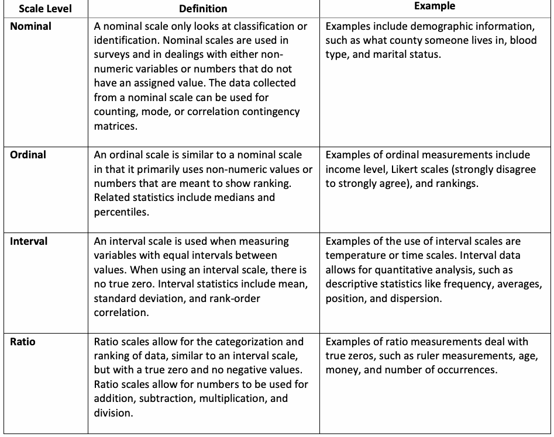
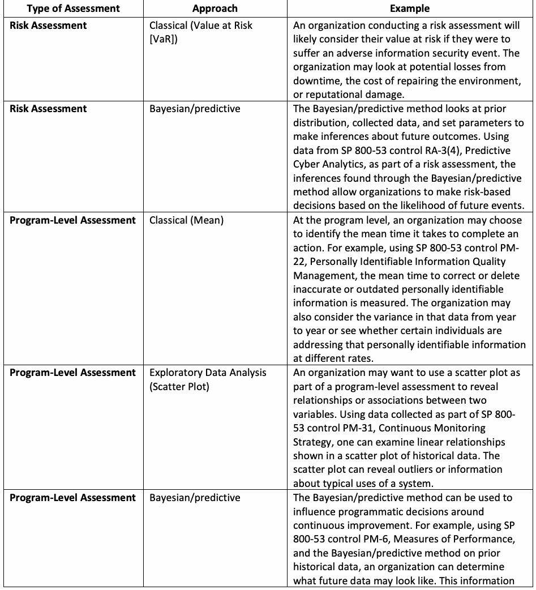
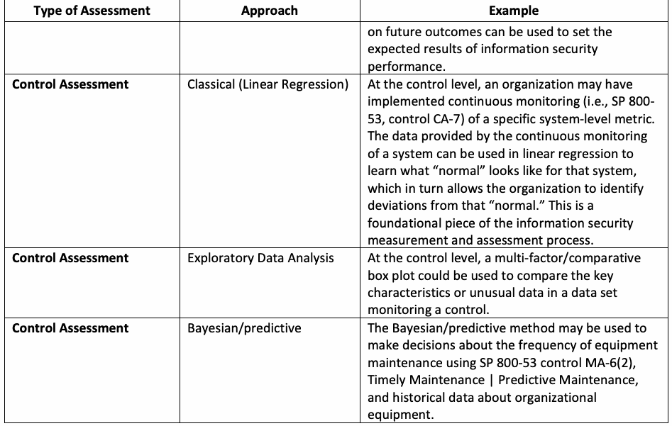
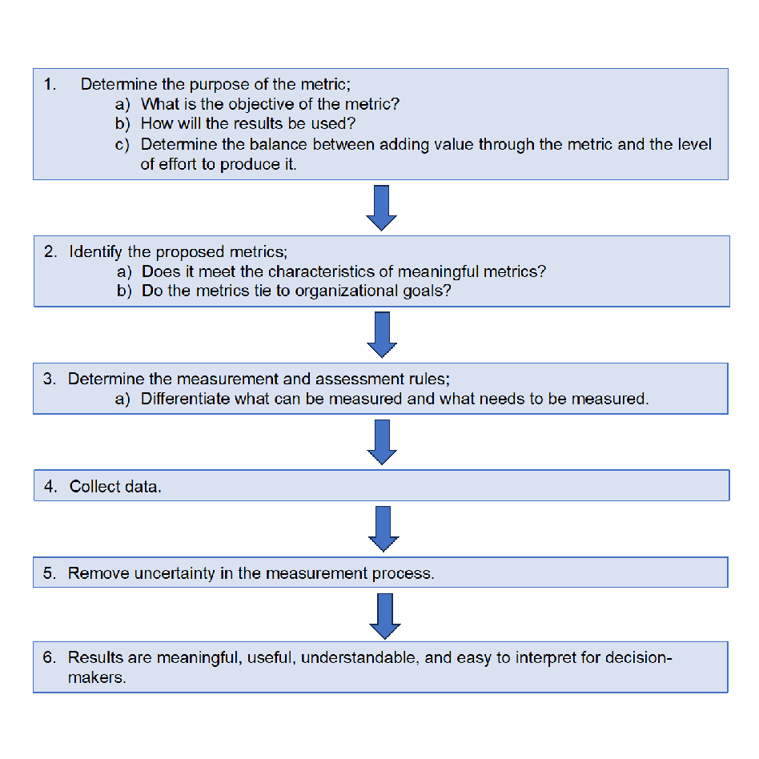
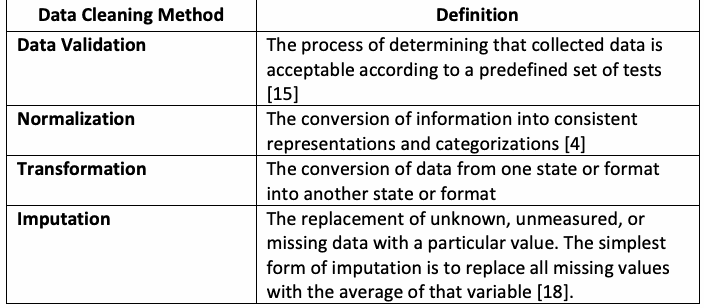
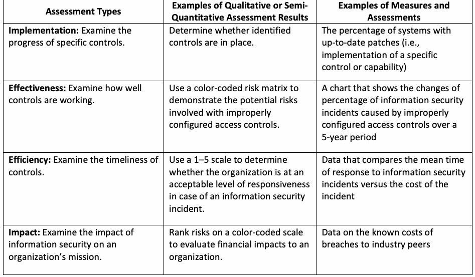

NIST Special Publication · PDF 原文抽出
Measurement Guide for Information Security: Volume 1 — Identifying and Selecting Measures
情報セキュリティ測定ガイド 第1巻：測定指標の特定と選定
NIST SP 800-55 Vol. 1（Measurement Guide for Information Security: Volume 1 — Identifying and Selecting Measures）の英文と日本語訳を段落ごとに並べた閲覧用ページです。組織のセキュリティ方針、手順、管理策の適切性を把握する測定指標の策定、優先順位付け、評価方法を示します。 翻訳は有志による非公式のもので、NIST および米国商務省が作成・承認・推奨したものではありません。要件の確認にはNIST の正式版 PDFを参照してください。
PDF から抽出した原文は原本との照合待ちです。
本文の数式はLaTeXの構造からKaTeXで表示しています。
NIST Special Publication 800
NIST特別刊行物800
未レビュー訳NIST SP 800-55v1
NIST SP 800-55 Vol. 1
未レビュー訳Measurement Guide for Information Security
情報セキュリティ測定ガイド
Volume 1 — Identifying and Selecting Measures
第1巻 — 測定尺度の特定と選択
未レビュー訳Katherine Schroeder Hung Trinh Victoria Yan Pillitteri
キャサリン・シュローダー、フン・チン、ヴィクトリア・ヤン・ピリッテリ
未レビュー訳This publication is available free of charge from: https://doi.org/10.6028/NIST.SP.800-55v1
本刊行物は以下から無料で入手できます：https://doi.org/10.6028/NIST.SP.800-55v1
未レビュー訳NIST Special Publication 800
NIST特別刊行物800
未レビュー訳NIST SP 800-55v1
NIST SP 800-55 Vol. 1
未レビュー訳Measurement Guide for Information Security
情報セキュリティ測定ガイド
Volume 1 — Identifying and Selecting Measures
第1巻 — 測定尺度の特定と選択
未レビュー訳Katherine Schroeder Hung Trinh Victoria Yan Pillitteri Computer Security Division Information Technology Laboratory
キャサリン・シュローダー、フン・チン、ヴィクトリア・ヤン・ピリッテリ コンピュータセキュリティ部門 情報技術研究所
未レビュー訳This publication is available free of charge from: https://doi.org/10.6028/NIST.SP.800-55v1
本刊行物は以下から無料で入手できます：https://doi.org/10.6028/NIST.SP.800-55v1
未レビュー訳December 2024
2024年12月
未レビュー訳［米国商務省の紋章。公的な標章のため、この非公式サイトには掲載していない。原本 PDF を参照。］
U.S. Department of Commerce Gina M. Raimondo, Secretary
米国商務省 Gina M. Raimondo、商務長官
未レビュー訳National Institute of Standards and Technology
米国国立標準技術研究所
未レビュー訳Laurie E. Locascio, NIST Director and Under Secretary of Commerce for Standards and Technology
Laurie E. Locascio、NIST所長兼商務省標準技術担当次官
未レビュー訳Certain equipment, instruments, software, or materials, commercial or non-commercial, are identified in this paper in order to specify the experimental procedure adequately. Such identification does not imply recommendation or endorsement of any product or service by NIST, nor does it imply that the materials or equipment identified are necessarily the best available for the purpose.
実験手順を適切に指定するため、本書では特定の機器、装置、ソフトウェアまたは材料（市販品か非市販品かを問わない）を特定することがある。その特定は、NISTによる製品またはサービスの推奨もしくは保証を意味せず、特定された材料や機器が目的に対して必ずしも最良であることを意味しない。
未レビュー訳There may be references in this publication to other publications currently under development by NIST in accordance with its assigned statutory responsibilities. The information in this publication, including concepts and methodologies, may be used by federal agencies even before the completion of such companion publications. Thus, until each publication is completed, current requirements, guidelines, and procedures, where they exist, remain operative. For planning and transition purposes, federal agencies may wish to closely follow the development of these new publications by NIST.
本刊行物には、NISTが割り当てられた法的責任に従って現在策定中の他の刊行物への参照が含まれる場合がある。本刊行物の情報（概念や方法論を含む）は、関連する刊行物が完成する前であっても連邦機関が利用できる。したがって、各刊行物が完成するまで、現行の要件、指針、手順が存在する場合は、引き続き有効である。計画や移行の目的で、連邦機関はNISTによるこれらの新刊行物の策定状況を注意深く確認してよい。
Organizations are encouraged to review all draft publications during public comment periods and provide feedback to NIST. Many NIST cybersecurity publications, other than the ones noted above, are available at https://csrc.nist.gov/publications.
組織には、公開意見募集期間中にすべての草案刊行物を確認し、NISTにフィードバックを提供することが推奨される。上記に記載したもの以外にも、多数のNISTサイバーセキュリティ刊行物を以下から入手できる：https://csrc.nist.gov/publications
Authority This publication has been developed by NIST in accordance with its statutory responsibilities under the Federal Information Security Modernization Act (FISMA) of 2014, 44 U.S.C. § 3551 et seq., Public Law (P.L.) 113-283. NIST is responsible for developing information security standards and guidelines, including minimum requirements for federal information systems, but such standards and guidelines shall not apply to national security systems without the express approval of appropriate federal officials exercising policy authority over such systems. This guideline is consistent with the requirements of the Office of Management and Budget (OMB) Circular A-130.
権限 本刊行物は、2014年連邦情報セキュリティ近代化法（FISMA）、合衆国法典第44編第3551条以下および公法113-283に基づく法的責任に従って、NISTが策定した。NISTは、連邦情報システムの最低要件を含む情報セキュリティ標準および指針を策定する責任を負う。ただし、当該標準および指針は、そのようなシステムについて政策権限を行使する適切な連邦職員の明示的な承認なしに、国家安全保障システムに適用してはならない。本指針は、行政管理予算局（OMB）通達A-130の要件に整合している。
Nothing in this publication should be taken to contradict the standards and guidelines made mandatory and binding on federal agencies by the Secretary of Commerce under statutory authority. Nor should these guidelines be interpreted as altering or superseding the existing authorities of the Secretary of Commerce, Director of the OMB, or any other federal official. This publication may be used by nongovernmental organizations on a voluntary basis and is not subject to copyright in the United States. Attribution would, however, be appreciated by NIST.
本刊行物のいかなる内容も、法的権限に基づき商務長官が連邦機関に義務付け、拘束力を持たせた標準および指針に反すると解釈してはならない。また、本指針を、商務長官、OMB長官、その他の連邦職員が有する既存の権限を変更または置き換えるものと解釈してはならない。本刊行物は、非政府組織が任意に利用でき、米国内の著作権の対象ではない。ただし、NISTの出典表示を歓迎する。
NIST Technical Series Policies Copyright, Use, and Licensing Statements NIST Technical Series Publication Identifier Syntax
NIST技術シリーズの方針 著作権、利用およびライセンスに関する声明 NIST技術シリーズ刊行物識別子の構文
未レビュー訳Publication History Approved by the NIST Editorial Review Board on 2024-11-04 Supersedes NIST SP 800-55 Rev. 1 (July 2008) https://doi.org/10.6028/NIST.SP.800-55r1
刊行履歴 NIST編集審査委員会による承認日：2024年11月4日 NIST SP 800-55改訂1（2008年7月）を置き換える https://doi.org/10.6028/NIST.SP.800-55r1
未レビュー訳How to Cite this NIST Technical Series Publication: Schroeder K, Trinh H, Pillitteri VY (2024) Measurement Guide for Information Security: Volume 1 — Identifying and Selecting Measures. (National Institute of Standards and Technology, Gaithersburg, MD), NIST Special Publication (SP) NIST SP 800-55v1. https://doi.org/10.6028/NIST.SP.800-55v1
本NIST技術シリーズ刊行物の引用方法：Schroeder K、Trinh H、Pillitteri VY（2024年）『情報セキュリティ測定ガイド：第1巻 — 測定尺度の特定と選択』（Measurement Guide for Information Security: Volume 1 — Identifying and Selecting Measures）。米国国立標準技術研究所（メリーランド州ゲイサーズバーグ）、NIST特別刊行物（SP）NIST SP 800-55v1。https://doi.org/10.6028/NIST.SP.800-55v1
未レビュー訳Author ORCID iDs Katherine Schroeder: 0000-0002-4129-9243 Hung Trinh: 0000-0002-3323-0836 Victoria Yan Pillitteri: 0000-0002-7446-7506
著者のORCID iD Katherine Schroeder：0000-0002-4129-9243 Hung Trinh：0000-0002-3323-0836 Victoria Yan Pillitteri：0000-0002-7446-7506
未レビュー訳Contact Information cyber-measures@list.nist.gov
連絡先情報 cyber-measures@list.nist.gov
未レビュー訳National Institute of Standards and Technology Attn: Computer Security Division, Information Technology Laboratory 100 Bureau Drive (Mail Stop 8930) Gaithersburg, MD 20899-8930
米国国立標準技術研究所 宛先：コンピュータセキュリティ部門、情報技術研究所 100 Bureau Drive（郵便区分8930） Gaithersburg, MD 20899-8930
未レビュー訳Additional Information Additional information about this publication is available at https://csrc.nist.gov/pubs/sp/800/55/v1/final, including related content, potential updates, and document history.
追加情報 本刊行物の関連コンテンツ、今後の更新、文書履歴などの追加情報は以下を参照：https://csrc.nist.gov/pubs/sp/800/55/v1/final
All comments are subject to release under the Freedom of Information Act (FOIA).
すべてのコメントは、情報公開法（FOIA）に基づく開示の対象となる。
Abstract
概要
This document provides guidance on how an organization can develop information security measures to identify the adequacy of in-place security policies, procedures, and controls. It explains the measures prioritization process and how to evaluate measures.
本書は、組織が導入済みのセキュリティ方針、手順、管理策の適切性を判断するため、情報セキュリティ測定尺度を策定する方法を示す。また、測定尺度の優先順位付けプロセスと測定尺度の評価方法を説明する。
Keywords
キーワード
未レビュー訳assessment; information security; measurement; measures; metrics; performance; qualitative; quantitative; reports; security controls.
評価、情報セキュリティ、測定、測定尺度、指標、パフォーマンス、定性的、定量的、報告書、セキュリティ管理策。
未レビュー訳Reports on Computer Systems Technology
コンピュータシステム技術に関する報告書
The Information Technology Laboratory (ITL) at the National Institute of Standards and Technology (NIST) promotes the U.S. economy and public welfare by providing technical leadership for the Nation’s measurement and standards infrastructure. ITL develops tests, test methods, reference data, proof of concept implementations, and technical analyses to advance the development and productive use of information technology. ITL’s responsibilities include the development of management, administrative, technical, and physical standards and guidelines for the cost-effective security and privacy of other than national security-related information in federal information systems. The Special Publication 800-series reports on ITL’s research, guidelines, and outreach efforts in information system security, and its collaborative activities with industry, government, and academic organizations.
米国国立標準技術研究所（NIST）の情報技術研究所（ITL）は、国の測定・標準インフラに技術的リーダーシップを提供し、米国経済と公共福祉の向上を促進する。ITLは、情報技術の開発と生産的利用を進めるため、試験、試験方法、参照データ、概念実証の実装、技術分析を開発する。ITLの責任には、連邦情報システムにおける国家安全保障関連以外の情報を費用対効果よく保護しプライバシーを確保するための、管理、運営、技術、物理的な標準と指針の策定が含まれる。特別刊行物800シリーズは、情報システムセキュリティに関するITLの研究、指針、普及活動、および産業界、政府、学術機関との連携活動を報告する。
Audience
対象読者
未レビュー訳This guide is written primarily for users with responsibilities or interest in information security measurement and assessment. Government and industry can use the concepts, processes, and candidate measures presented in this guide.
本ガイドは主に、情報セキュリティ測定および評価に関する責任または関心を持つ利用者を対象とする。政府および産業界は、本ガイドに示す概念、プロセス、候補となる尺度を利用できる。
Patent Disclosure Notice
特許開示に関する通知
未レビュー訳NOTICE: ITL has requested that holders of patent claims whose use may be required for compliance with the guidance or requirements of this publication disclose such patent claims to ITL. However, holders of patents are not obligated to respond to ITL calls for patents and ITL has not undertaken a patent search in order to identify which, if any, patents may apply to this publication.
通知：本刊行物の指針または要件への準拠に使用が必要となる可能性のある特許請求項について、ITLはその保有者に開示を求めている。ただし、特許保有者にはITLの特許照会に応答する義務はなく、ITLは本刊行物に適用される可能性のある特許の有無を特定するための特許調査を実施していない。
As of the date of publication and following call(s) for the identification of patent claims whose use may be required for compliance with the guidance or requirements of this publication, no such patent claims have been identified to ITL.
本刊行物の発行日時点で、また準拠に使用が必要となる可能性のある特許請求項を特定するための照会を行った結果、本刊行物に該当する特許請求項はITLに報告されていない。
No representation is made or implied by ITL that licenses are not required to avoid patent infringement in the use of this publication.
本刊行物の使用に際して特許侵害を避けるためのライセンスが不要であると、ITLが表明または暗示するものではない。
Table of Contents
目次
1. Introduction — 1
1. 序論 — 1
未レビュー訳2. Fundamentals — 4
2. 基礎 — 4
未レビュー訳3. Measurement Considerations — 12
3. 測定に関する考慮事項 — 12
未レビュー訳3.1.1. Measures Documentation — 12
3.1.1. 測定尺度の文書化 — 12
未レビュー訳3.1.2. Measurement Reporting — 14
3.1.2. 測定結果の報告 — 14
未レビュー訳3.1.3. Data Management — 14
3.1.3. データ管理 — 14
未レビュー訳3.1.4. Data Quality — 15
3.1.4. データ品質 — 15
未レビュー訳3.1.5. Uncertainty and Errors — 15
3.1.5. 不確実性と誤差 — 15
未レビュー訳3.3.1. Implementation Measures — 17
3.3.1. 実装測定尺度 — 17
未レビュー訳3.3.2. Effectiveness Measures — 17
3.3.2. 有効性測定尺度 — 17
未レビュー訳3.3.3. Efficiency Measures — 18
3.3.3. 効率性測定尺度 — 18
未レビュー訳3.3.4. Impact Measures — 18
3.3.4. 影響測定尺度 — 18
未レビュー訳4. Selecting and Prioritizing Measures — 19
4. 測定尺度の選択と優先順位付け — 19
未レビュー訳4.2.1. Comparing Measures and Assessment Results — 20
4.2.1. 測定尺度と評価結果の比較 — 20
未レビュー訳4.3.1. Likelihood and Impact Modeling — 21
4.3.1. 発生可能性と影響度のモデル化 — 21
未レビュー訳4.3.2. Weighing Scale — 22
4.3.2. 重み付け尺度 — 22
未レビュー訳References — 24
参考文献 — 24
未レビュー訳Appendix A. Glossary — 26
付録A. 用語集 — 26
未レビュー訳Appendix B. Data Analysis Dictionary — 29
付録B. データ分析用語集 — 29
未レビュー訳Appendix C. Modeling Impact and Likelihood — 32
付録C. 影響度と発生可能性のモデル化 — 32
Appendix D. Change Log — 34
付録D. 変更履歴 — 34
未レビュー訳List of Tables
表一覧
未レビュー訳Table 1. Stevens Scale of Measurement — 3
表1. スティーブンスの測定尺度 — 3
Table 2. Data analysis examples — 6
表2. データ分析の例 — 6
Table 3. Data cleaning methods for reducing uncertainty — 16
表3. 不確実性低減のためのデータクリーニング方法 — 16
未レビュー訳Table 4. Examples of measures and types of qualitative and semi-quantitative assessment results — 20
表4. 測定尺度の例と定性的・半定量的評価結果の種類 — 20
List of Figures
図一覧
未レビュー訳Fig. 1. Notional process for the definition, collection, and analysis of metrics — 10
図1. 指標の定義、収集、分析の想定プロセス — 10
1. Introduction
1. 序論
Information security measurement enables organizations to describe and quantify information security, allocate finite resources, and make informed and data-driven decisions for improved outcomes. However, organizations first need to know what policies, procedures, and controls they have in place at any given time; whether those policies and procedures are having the desired results; and how the organization and its risks are impacted. By developing and monitoring measurements that evaluate what an organization has in place for information security risk management and how well those efforts are working, an organization can better address their goals and direct resources.
情報セキュリティ測定によって、組織は情報セキュリティを説明・定量化し、限られた資源を配分し、より良い成果につながる情報に基づくデータ駆動型の判断を下せる。ただし、組織はまず、任意の時点でどの方針、手順、管理策を導入しているか、それらが望ましい結果をもたらしているか、組織とそのリスクにどのような影響が及ぶかを把握する必要がある。情報セキュリティリスク管理のために組織が何を整備し、それらがどの程度機能しているかを評価する測定を策定・監視することで、組織は目標により適切に対応し、資源を方向付けられる。
1.1. Purpose and Scope
1.1. 目的と適用範囲
NIST Special Publication (SP) 800-55v1 (Volume 1) is a flexible guide for developing and selecting information security measures at the organization, mission/business, and system levels to identify the success of in-place policies, procedures, and controls.1 This document expands on previous NIST work on information security measures and measurements by focusing on quantitative assessments2 and addressing organizational and program maturity.
NIST特別刊行物（SP）800-55v1（第1巻）は、導入済みの方針、手順、管理策の有効性を特定するため、組織、ミッション／事業、システムの各レベルで情報セキュリティ測定尺度を策定・選択する柔軟なガイドである。1 本書は、定量的評価2に重点を置き、組織およびプログラムの成熟度を扱うことで、情報セキュリティ測定に関するNISTの従来の取り組みを拡張する。
未レビュー訳The SP 800-55v2 [23] provides a methodology for implementing an information security measurement program. Additionally, while many of the principles of information security measurement may apply to privacy, privacy is out of scope for this document.
SP 800-55v2 [23]は、情報セキュリティ測定プログラムを実装する方法論を示す。また、情報セキュリティ測定の原則の多くはプライバシーにも当てはまるが、プライバシーは本書の適用範囲外である。
1.2. Relationship to Other NIST Publications
1.2. 他のNIST刊行物との関係
This document is intended to provide considerations for measuring the information security program activities described in other NIST publications, including:
本書は、次を含む他のNIST刊行物に記載された情報セキュリティプログラム活動を測定する際の考慮事項を示す。
•SP 800-137A, Assessing Information Security Continuous Monitoring Programs [14]
•SP 800-137A『情報セキュリティ継続的監視プログラムの評価』[14]
•The NIST Cybersecurity Framework (CSF) 2.0 [1]
•NISTサイバーセキュリティフレームワーク（CSF）2.0 [1]
•SP 800-30r1 (Revision 1), Guide for Conducting Risk Assessments [9]
•SP 800-30改訂1『リスク評価の実施に関する手引』[9]
•SP 800-37r2, Risk Management Framework for Information Security Systems and Organizations: A System Life Cycle Approach for Security and Privacy [10]
•SP 800-37改訂2『情報システムおよび組織のためのセキュリティとプライバシーに関するリスク管理フレームワーク：システムライフサイクルのアプローチ』[10]
•SP 800-161r1, Cybersecurity Supply Chain Risk Management Practices for Systems and Organizations [17]
•SP 800-161改訂1『システムおよび組織のためのサイバーセキュリティ・サプライチェーンリスク管理の実践』[17]
•NIST Engineering Statistics Handbook [18]
•NISTエンジニアリング統計ハンドブック [18]
•NIST Internal Report (IR) 8286, Identifying and Estimating Cybersecurity Risk for Enterprise Risk Management (ERM) [4]
•NIST内部報告書（IR）8286『エンタープライズリスク管理（ERM）のためのサイバーセキュリティリスクの特定と推定』[4]
未レビュー訳1.3. Document Organization
1.3. 文書の構成
The remaining sections of this document discuss the following:
本書の残りの各節では、以下を説明する。
•Section 2, Fundamentals
•第2節「基礎」
•Section 3, Measurement Considerations
•第3節「測定に関する考慮事項」
•Section 4, Selecting and Prioritizing Measures
•第4節「測定尺度の選択と優先順位付け」
•Appendix A, Glossary
•付録A「用語集」
•Appendix B, Data Analysis Dictionary
•付録B「データ分析辞書」
•Appendix C, Modeling Impact and Likelihood
•付録C「影響度と発生可能性のモデル化」
•Appendix D, Change Log
•付録D「変更履歴」
未レビュー訳1.4. Document Terminology
1.4. 文書で用いる用語
In the context of this document, the following terms are defined as follows:
本書では、以下の用語を次のとおり定義する。
•Assessment: The action of evaluating, estimating, or judging against defined criteria. Different types of assessment (i.e., qualitative, quantitative, and semi-quantitative) are used to assess risk. Some types of assessment yield measures.
•評価：定義済みの基準に照らして評価、推定、または判断する行為。リスク評価には、定性的、定量的、半定量的なさまざまな評価を用いる。評価によって測定尺度が得られる場合もある。
•Assessment result: The output or outcome of an assessment.
•評価結果：評価の出力または結果。
•Information security3: The protection of information and systems from unauthorized access, use, disclosure, disruption, modification, or destruction to provide confidentiality, integrity, and availability. [2]
•情報セキュリティ3：機密性、完全性、可用性を確保するため、不正アクセス、使用、開示、中断、改変、破壊から情報とシステムを保護すること。[2]
未レビュー訳•Measurement: The process of obtaining quantitative values using quantitative methods.
•測定：定量的方法を用いて定量値を得るプロセス。
•Measures: Quantifiable and objective values that result from measurement.
•測定尺度：測定によって得られる、定量化可能で客観的な値。
•Metrics: Measures and assessment results designed to track progress, facilitate decision-making, and improve performance with respect to a set target.
•指標：進捗の追跡、意思決定の促進、設定目標に対するパフォーマンス改善のために設計された測定尺度および評価結果。
•Qualitative assessment: The use of a set of methods, principles, or rules for assessing risk based on nonnumerical categories or levels. [9]
•定性的評価：数値ではないカテゴリまたは水準に基づいてリスクを評価するための方法、原則、規則の集合を用いること。[9]
•Quantitative assessment: The use of a set of methods, principles, or rules for assessing risks based on the use of numbers where the meanings and proportionality of values are maintained inside and outside of the context of the assessment. [9]
•定量的評価：数値を用い、その値の意味と比例関係が評価の文脈の内外で維持されるよう、一定の方法、原則、規則を用いてリスクを評価すること。[9]
•Semi-quantitative assessment: The use of a set of methods, principles, or rules for assessing risk based on bins, scales, or representative numbers whose values and meanings are not maintained in other contexts. [9]
•半定量的評価：区分、尺度、または代表値に基づき、値および意味が他の文脈では維持されない一定の方法、原則、規則を用いてリスクを評価すること。[9]
未レビュー訳This document discusses concepts that are similar to the Stevens Scale of Measurement, as shown in Table 1, but takes a different view on what is and is not a measurement. For the purposes of this document, a nominal scale is considered a form of data gathering, and an ordinal scale is considered a ranking system. Both interval and ratio scales use variables that represent true numbers and can be used in a quantitative assessment, so they are considered measurement [19].
本書では、表1に示すスティーブンスの測定尺度に似た概念を論じるが、何を測定とするかについて異なる見方を採用する。本書では、名義尺度をデータ収集の一形態、順序尺度を順位付けシステムとみなす。間隔尺度と比率尺度は、真の数値を表す変数を用い、定量的評価に利用できるため、測定とみなす[19]。
未レビュー訳Table 1. Stevens Scale of Measurement
表1. スティーブンスの測定尺度
未レビュー訳| Scale Level | Definition | Example |
| Nominal | A nominal scale only looks at classification or identification. Nominal scales are used in surveys and in dealings with either non- numeric variables or numbers that do not have an assigned value. The data collected from a nominal scale can be used for counting, mode, or correlation contingency matrices. | Examples include demographic information, such as what county someone lives in, blood type, and marital status. |
| Ordinal | An ordinal scale is similar to a nominal scale in that it primarily uses non-numeric values or numbers that are meant to show ranking. Related statistics include medians and percentiles. | Examples of ordinal measurements include income level, Likert scales (strongly disagree to strongly agree), and rankings. |
| Interval | An interval scale is used when measuring variables with equal intervals between values. When using an interval scale, there is no true zero. Interval statistics include mean, standard deviation, and rank-order correlation. | Examples of the use of interval scales are temperature or time scales. Interval data allows for quantitative analysis, such as descriptive statistics like frequency, averages, position, and dispersion. |
| Ratio | Ratio scales allow for the categorization and ranking of data, similar to an interval scale, but with a true zero and no negative values. Ratio scales allow for numbers to be used for addition, subtraction, multiplication, and division. | Examples of ratio measurements deal with true zeros, such as ruler measurements, age, money, and number of occurrences. |
原本PDFの抜粋画像

| 尺度の水準 | 定義 | 例 |
| 名義 | 名義尺度は分類または識別のみを扱う。名義尺度は、調査や、非数値変数または割り当てられた値を持たない数値を扱う場合に用いる。名義尺度から収集したデータは、件数、最頻値、相関の分割表に利用できる。 | 例として、居住する郡、血液型、婚姻状況などの人口統計情報がある。 |
| 順序 | 順序尺度は、主に数値ではない値、または順位を示す数値を用いる点で名義尺度に似ている。関連する統計量には中央値とパーセンタイルがある。 | 順序測定の例には、所得水準、リッカート尺度（「強く反対」から「強く賛成」まで）、順位がある。 |
| 間隔 | 間隔尺度は、値の間隔が等しい変数を測定する際に用いる。間隔尺度には真のゼロがない。間隔尺度の統計量には、平均、標準偏差、順位相関がある。 | 間隔尺度の例には温度や時刻の尺度がある。間隔データは、頻度、平均、位置、ばらつきなどの記述統計を含む定量分析に利用できる。 |
| 比率 | 比率尺度は、間隔尺度と同様にデータの分類と順位付けに使えるが、真のゼロがあり、負の値はない。比率尺度では、数値を加算、減算、乗算、除算に利用できる。 | 比率測定の例は、定規での測定、年齢、金額、発生件数など、真のゼロを扱うもの。 |
2. Fundamentals
2. 基礎
The terms assessment and measurement are often used interchangeably in the information security field, as both aid in risk management and security posture analysis. This document provides a lexicon for key terminology and an overview of foundational concepts for measuring and assessing information security risk and clarifies the distinction between assessment and measurement. As described in Sec. 1.4, assessment refers to the process of evaluating, estimating, or judging against defined criteria, and measurement is the process of obtaining quantitative values. Hence, assessment is a broader concept that also includes measurement.
情報セキュリティ分野では、「評価」と「測定」を同じ意味で使うことが多い。どちらもリスク管理とセキュリティ態勢分析に役立つためである。本書は、情報セキュリティリスクの測定・評価に関する主要用語と基礎概念の概要を示し、評価と測定の違いを明確にする。第1.4節で説明したとおり、評価とは定義済みの基準に照らして評価、推定、または判断するプロセスであり、測定とは定量値を得るプロセスである。したがって、評価は測定も含むより広い概念である。
Organizations perform multiple kinds of assessment when evaluating information security risk, such as risk assessments, program assessments, and control assessments. Risk assessments are used to identify the risks that an organization faces and can support decision-making [9]. Program-level assessments are used for decision-making about the strategies, policies, procedures, and operations that determine the security posture of an information security program. In control assessments, organizations evaluate whether specific controls are performing the way they were intended and achieving the desired results. Both program assessments and control assessments are in and of themselves a form of risk assessment and provide a different lens for viewing information security risk. SP 800-55 is intentionally agnostic on specific risk assessment models. Many of these models may help identify areas of threat, likelihood, vulnerability, and impact that require further assessment.4
組織は、情報セキュリティリスクを評価する際、リスク評価、プログラム評価、管理策評価など複数種類の評価を行う。リスク評価は組織が直面するリスクを特定し、意思決定を支援するために用いる[9]。プログラムレベルの評価は、情報セキュリティプログラムの態勢を決める戦略、方針、手順、運用に関する意思決定に用いる。管理策評価では、個別の管理策が意図どおりに機能し、望ましい結果を達成しているかを評価する。プログラム評価と管理策評価は、それ自体がリスク評価の一形態であり、情報セキュリティリスクを見る異なる視点を提供する。SP 800-55は特定のリスク評価モデルを意図的に前提としない。多くのモデルは、さらに評価が必要な脅威、発生可能性、脆弱性、影響度の領域を特定するのに役立つ。4
未レビュー訳2.1. Measurement and Quantitative Assessment
2.1. 測定と定量的評価
Measures are numerically expressed data that are gathered through the process of measurement.5 Measures can be derived from any operations or systems that can be measured with numbers. Quantitative assessments judge measures data against a set criteria or target and can be used to analyze information security risks using frequency, rates, financial impacts, and other numeric indicators.
測定尺度は、測定プロセスを通じて収集した数値で表現されるデータである。5 数値で測定できるあらゆる運用やシステムから測定尺度を導出できる。定量的評価では測定データを基準や目標に照らして判断し、頻度、割合、財務影響、その他の数値指標を用いて情報セキュリティリスクを分析できる。
未レビュー訳Using quantitative assessments requires a knowledge of measurement techniques and data analysis processes. One challenge of measurement is using the right measures and quantity of measures to perform useful analysis. A single measure alone may not provide sufficient data to make risk-based decisions, but organizations may also have restraints on resources that prevent them from employing and analyzing every potential measure. An organization finds the number of measures and depth of analysis that work best for their needs.
定量的評価を行うには、測定技法とデータ分析プロセスに関する知識が必要である。測定上の課題の1つは、有用な分析を行うために適切な種類と量の測定尺度を選ぶことである。単一の測定尺度だけではリスクに基づく判断に十分なデータが得られない場合がある一方、資源の制約により、考えられるすべての測定尺度を利用・分析できない組織もある。組織はニーズに最も適した測定尺度の数と分析の深さを判断する。
The ability to measure information security risks relies on data availability. Methods for collecting information security data may include experimentation, observation, or sampling. The NIST Engineering Statistics Handbook [18] offers detailed information on choosing a sampling scheme, including the following methods:
情報セキュリティリスクの測定能力は、データの利用可能性に依存する。情報セキュリティデータの収集方法には、実験、観察、サンプリングがある。NISTエンジニアリング統計ハンドブック[18]には、次を含むサンプリング方式の選択に関する詳細な情報がある。
•Experimentation is a systematic approach to testing new ideas, methods, or activities that applies principles and techniques at the data collection stage to ensure the generation of valid, defensible, and supportable conclusions. A recognizable use of experimentation to collect information security data is a phishing test, which is a form of internal security testing where organizations send fake phishing emails to determine which users respond to it. The rates of success are then judged against set criteria.
•実験：データ収集段階で原則と技法を適用し、有効で、根拠があり、裏付け可能な結論を得るため、新しい考え、方法、活動を体系的に試験する方法。情報セキュリティデータ収集における実験の分かりやすい例はフィッシングテストである。これは組織が偽のフィッシングメールを送り、どの利用者が応答するかを調べる内部セキュリティテストの一種である。成功率を所定の基準に照らして評価する。
•Observational data refers to capturing data through the observation of an activity or behavior without the direct involvement of the subject. Observational data is often gathered as part of routine information security operations, such as log management tools that are used to collect and analyze network activities. Data from these logs is observational and can be used for further analysis.
•観察データ：対象者が直接関与しない状態で、活動や行動を観察して取得するデータ。観察データは、ネットワーク活動の収集・分析に利用するログ管理ツールなど、通常の情報セキュリティ運用の一部として収集されることが多い。これらのログデータは観察データであり、さらなる分析に利用できる。
•Sampling is the process of taking samples of something for the purpose of analysis. Sampling may be used when continuous observation and passive data collection are not an option or when random, stratified, or systematic sampling may be preferred. Random sampling is a method of sampling in which each sample has an equal chance of selection in hopes of gathering an unbiased representation. Stratified sampling is the process of segmenting a population across levels of some factors to minimize variability within those segments (e.g., taking a sample from a terminal in each department of an organization). Stratified sampling may help an assessment target organizational units without being overwhelmed by noisy data collection but can provide biased results. Systematic sampling involves taking samples at a regular interval (e.g., once an hour or from every tenth user). Systematic sampling is useful for identifying macro-trends but may not provide enough conclusive measurements for the entire population if an underlying pattern is present.
•サンプリング：分析を目的として対象の標本を抽出するプロセス。継続的な観察や受動的なデータ収集ができない場合、または無作為、層化、系統的サンプリングが望ましい場合に用いる。無作為サンプリングでは、偏りのない代表を得ることを目指し、各標本が同じ確率で選ばれる。層化サンプリングでは、要因に応じた複数水準に母集団を分け、各層内のばらつきを小さくする（例：組織の各部門で端末から1台ずつ標本を取る）。層化サンプリングは、雑音の多いデータに圧倒されず組織単位を評価対象にできる一方、偏った結果をもたらす可能性がある。系統的サンプリングでは、一定間隔で標本を取る（例：1時間ごと、または10人ごと）。大きな傾向の特定に有用だが、基盤となるパターンがある場合、母集団全体を結論付けるのに十分な測定値が得られない可能性がある。
Once the data from measurement is procured, the outputs of quantitative analysis can be used in a quantitative assessment to determine whether the organization is meeting its information security goals and support risk-based decision-making. Data analysis methods6 are largely based on the type of questions that the organization is asking about their information security risks, program, and controls. The NIST Engineering Statistics Handbook [18] identifies three popular approaches to data analysis:
測定データを取得したら、定量分析の出力を定量的評価に用いて、組織が情報セキュリティ目標を達成しているかを判断し、リスクに基づく意思決定を支援できる。データ分析手法6は、組織が情報セキュリティリスク、プログラム、管理策について何を問うかに大きく依存する。NISTエンジニアリング統計ハンドブック[18]では、一般的なデータ分析アプローチを3つ挙げている。
未レビュー訳1.Classical — In the classical data analysis approach, data collection is directly followed by modeling, and the analysis, estimation, and testing that come after focus on the parameters of that model. Classical data analysis includes deterministic and probabilistic models, such as regression and the analysis of variance (ANOVA).
1.古典的分析 — 古典的データ分析では、データ収集後すぐにモデル化を行い、その後の分析、推定、検定ではモデルのパラメーターに着目する。古典的分析には、回帰分析や分散分析（ANOVA）など、決定論的モデルと確率論的モデルが含まれる。
2.Exploratory — Exploratory data analysis begins by inferring what model would be appropriate before trying different analytic models. Identifying patterns in the data may give insight as to what models would produce the most useful information. Some common exploratory data analysis graphical techniques include standard deviation plots and histograms.
2.探索的分析 — 探索的データ分析では、異なる分析モデルを試す前に、適切なモデルを推定する。データ中のパターンを特定すると、最も有用な情報をもたらすモデルについて知見を得られる。一般的な探索的データ分析のグラフ技法には、標準偏差プロットやヒストグラムがある。
3.Bayesian — Bayesian/predictive methodology consists of formally combining both the prior distribution of the parameters and the collected data to jointly make inferences and/or test assumptions about the model of parameters. Bayesian methods can be used for expected range setting and predictive models.
3.ベイズ法 — ベイズ／予測手法は、パラメーターの事前分布と収集データの両方を正式に組み合わせ、パラメーターのモデルに関する推論や仮定の検定を行う。ベイズ法は、期待範囲の設定や予測モデルに利用できる。
Table 2 shows examples of quantitative analysis across risk assessment, program-level assessment, and control-level assessment.
表2に、リスク評価、プログラムレベル評価、管理策レベル評価における定量分析の例を示す。
Table 2. Data analysis examples
表2. データ分析の例
未レビュー訳| Type of Assessment | Approach | Example |
| Risk Assessment | Classical (Value at Risk [VaR]) | An organization conducting a risk assessment will likely consider their value at risk if they were to suffer an adverse information security event. The organization may look at potential losses from downtime, the cost of repairing the environment, or reputational damage. |
| Risk Assessment | Bayesian/predictive | The Bayesian/predictive method looks at prior distribution, collected data, and set parameters to make inferences about future outcomes. Using data from SP 800-53 control RA-3(4), Predictive Cyber Analytics, as part of a risk assessment, the inferences found through the Bayesian/predictive method allow organizations to make risk-based decisions based on the likelihood of future events. |
| Program-Level Assessment | Classical (Mean) | At the program level, an organization may choose to identify the mean time it takes to complete an action. For example, using SP 800-53 control PM- 22, Personally Identifiable Information Quality Management, the mean time to correct or delete inaccurate or outdated personally identifiable information is measured. The organization may also consider the variance in that data from year to year or see whether certain individuals are addressing that personally identifiable information at different rates. |
| Program-Level Assessment | Exploratory Data Analysis (Scatter Plot) | An organization may want to use a scatter plot as part of a program-level assessment to reveal relationships or associations between two variables. Using data collected as part of SP 800- 53 control PM-31, Continuous Monitoring Strategy, one can examine linear relationships shown in a scatter plot of historical data. The scatter plot can reveal outliers or information about typical uses of a system. |
| Program-Level Assessment | Bayesian/predictive | The Bayesian/predictive method can be used to influence programmatic decisions around continuous improvement. For example, using SP 800-53 control PM-6, Measures of Performance, and the Bayesian/predictive method on prior historical data, an organization can determine what future data may look like. This information |
原本PDFの抜粋画像

| 評価の種類 | 手法 | 例 |
| リスク評価 | 古典的（バリュー・アット・リスク［VaR］） | リスク評価を行う組織は、情報セキュリティ上の好ましくない事象が発生した場合のバリュー・アット・リスクを検討することが多い。停止による潜在的損失、環境の復旧コスト、評判への損害などを考慮できる。 |
| リスク評価 | ベイズ法／予測 | ベイズ法／予測手法では、事前分布、収集データ、設定したパラメーターを検討し、将来の結果を推論する。リスク評価の一環としてSP 800-53管理策RA-3(4)「予測型サイバー分析」のデータを用いると、この方法で得た推論に基づき、組織は将来事象の発生可能性に基づくリスク判断を下せる。 |
| プログラムレベルの評価 | 古典的（平均） | プログラムレベルでは、ある措置の完了に要する平均時間を特定できる。例えば、SP 800-53管理策PM-22「個人識別可能情報の品質管理」を用い、不正確または古くなった個人識別可能情報の訂正・削除に要する平均時間を測定する。年ごとのデータのばらつきを検討したり、担当者によって処理速度が異なるかを確認したりできる。 |
| プログラムレベルの評価 | 探索的データ分析（散布図） | 組織は、2つの変数間の関係や関連性を明らかにするため、プログラムレベルの評価で散布図を利用できる。SP 800-53管理策PM-31「継続的監視戦略」の一環として収集したデータを用い、過去データの散布図に現れる線形関係を調べられる。散布図から外れ値やシステムの一般的な利用状況に関する情報が分かる場合がある。 |
| プログラムレベルの評価 | ベイズ法／予測 | ベイズ法／予測手法を継続的改善に関するプログラム上の判断に役立てることができる。例えば、SP 800-53管理策PM-6「パフォーマンス測定」と過去データにこの手法を適用し、将来のデータがどのようになるかを推定できる。この情報 |
| Type of Assessment | Approach | Example |
| on future outcomes can be used to set the expected results of information security performance. | ||
| Control Assessment | Classical (Linear Regression) | At the control level, an organization may have implemented continuous monitoring (i.e., SP 800- 53, control CA-7) of a specific system-level metric. The data provided by the continuous monitoring of a system can be used in linear regression to learn what “normal” looks like for that system, which in turn allows the organization to identify deviations from that “normal.” This is a foundational piece of the information security measurement and assessment process. |
| Control Assessment | Exploratory Data Analysis | At the control level, a multi-factor/comparative box plot could be used to compare the key characteristics or unusual data in a data set monitoring a control. |
| Control Assessment | Bayesian/predictive | The Bayesian/predictive method may be used to make decisions about the frequency of equipment maintenance using SP 800-53 control MA-6(2), Timely Maintenance | Predictive Maintenance, and historical data about organizational equipment. |
原本PDFの抜粋画像

| 評価の種類 | 手法 | 例 |
| を将来の結果に関する推論に用い、情報セキュリティのパフォーマンスで期待する結果を設定できる。 | ||
| 管理策評価 | 古典的（線形回帰） | 管理策レベルでは、特定のシステムレベル指標に対する継続的監視（例：SP 800-53管理策CA-7）を実装している場合がある。システムの継続的監視で得たデータを線形回帰に用いることで、そのシステムの「正常」な状態を把握し、そこからの逸脱を特定できる。これは情報セキュリティ測定・評価プロセスの基礎となる。 |
| 管理策評価 | 探索的データ分析 | 管理策を監視するデータセットの主要な特性や異常値を比較するため、管理策レベルで多要因比較箱ひげ図を利用できる。 |
| 管理策評価 | ベイズ法／予測 | ベイズ法／予測手法は、SP 800-53管理策MA-6(2)「適時保守｜予測保守」と組織の機器に関する過去データを用いて、保守頻度を判断する際にも利用できる。 |
Organizations that are early in the process of assessing their information security risks, program, or systems may rely heavily on qualitative assessments that present nonnumerical information in place of measurement. These nonnumerical methods can help show context, examine labels, and look at behavior. A prominent example of qualitative assessment featured in many information security measurement programs is the risk matrix — a table that uses colored rating scales to show the impact and likelihood of various risks. As organizations gain the ability to record and track information security data, they can move toward the increased precision and reduced bias of quantitative assessments.
情報セキュリティリスク、プログラム、システムの評価を始めたばかりの組織は、測定に代えて数値以外の情報を示す定性的評価に大きく依存する場合がある。こうした数値以外の方法は、状況の説明、ラベルの検討、行動の観察に役立つ。多くの情報セキュリティ測定プログラムで使われる定性的評価の代表例はリスクマトリクスであり、色付きの評価尺度を用いて各種リスクの影響度と発生可能性を示す表である。組織が情報セキュリティデータを記録・追跡できるようになるにつれ、定量的評価の精度向上と偏り低減を進められる。
2.2. Types of Assessment
2.2. 評価の種類
There are three types of assessment:
評価には3種類ある。
1.Qualitative assessments are subjective and interpretive, using nonnumerical values or categories, such as high, medium, and low or heat maps.
1.定性的評価は主観的な解釈に基づき、高・中・低などの非数値の値やカテゴリ、ヒートマップを用いる。
2.2. Semi-quantitative assessments use numbers, but those numbers do not maintain their value outside of the assessment context. This is commonly seen in models that use number rankings to show a level of organizational integration. While the assessment may say that the organization is at “level 3,” that “3” represents a set of qualities rather than a numerical value.
2.2. 半定量的評価では数値を用いるが、その数値は評価の文脈の外では値としての意味を保たない。これは、組織への統合の水準を数値の順位で示すモデルによく見られる。評価で組織が「レベル3」にあるとされても、その「3」は数値ではなく、一連の特性を表している。
3.Quantitative assessments use data and statistics to obtain objective, precise results, and the numbers retain their values outside of the context. For example, 98 % of authorized accounts belong to current employees, and 2 % belong to former employees. Here, the values “98 %” and “2 %” stay the same regardless of the context. Since for the purpose of SP 800-55 measurement is the process of obtaining quantifiable values using quantifiable assessment methods, measures are quantitative assessment results.
3.定量的評価はデータと統計を用いて客観的で精密な結果を得るものであり、数値は文脈の外でも値を保つ。例えば、認可済みアカウントの98%は現職職員に属し、2%は退職職員に属するとする。この「98%」と「2%」は文脈によらず同じ値である。SP 800-55では、測定を定量的評価手法で定量値を得るプロセスとするため、測定尺度は定量的評価の結果である。
Quantitative assessments (i.e., measurements) can provide objective data that allows for tracking and shows changes. However, they can be difficult to produce in early stages of measurement since they require more data and resources than nonnumerical and categorified qualitative assessments. In contrast, simple nonnumerical and categorified qualitative assessments may be more commonly used and easier to conduct, but their results can also be subjective and require everyone to have an equal understanding of the scale used.
定量的評価（すなわち測定）によって、追跡や変化の把握を可能にする客観的なデータが得られる。しかし、非数値のカテゴリを用いる定性的評価と比べて、より多くのデータと資源が必要となるため、測定の初期段階では実施が難しいことがある。これに対して、単純な非数値カテゴリによる定性的評価はよく用いられ、実施しやすい場合があるが、その結果には主観性が入り得る。また、利用者全員が尺度を同じように理解する必要がある。
It is important for organizations to consider their motivations for measuring information security risks before determining whether a quantitative or qualitative assessment is appropriate. For example, an organization motivated primarily by compliance with an industry certification or international standard has different measurement needs than an organization motivated by cost reduction. An organization could have multiple, competing motivations that drive the identification and selection of measures.
定量的評価と定性的評価のどちらが適切かを判断する前に、情報セキュリティリスクを測定する動機を組織が考慮することが重要である。例えば、業界認証や国際標準への準拠を主な動機とする組織と、コスト削減を動機とする組織では、必要な測定が異なる。測定尺度の特定と選択を促す動機が、複数あり互いに競合する組織もある。
Some organizational motivations may benefit from quantitative assessments, such as trying to determine whether the organization is patching known vulnerabilities in an acceptable amount of time. Knowing the mean time to remediate a vulnerability provides more precise insight into patching efficiency than simply knowing the number of vulnerabilities patched in a year. Because the question of mean time to remediate a vulnerability deals with attainable non-zero numbers, a measurement can be taken, and a mathematically derived answer can be given.
既知の脆弱性に対するパッチを許容可能な時間内に適用できているかを判断するなど、組織の動機によっては定量的評価が有益である。脆弱性の修復に要する平均時間が分かれば、年間に適用したパッチ数を把握するだけの場合より、パッチ適用の効率性を精密に理解できる。脆弱性の平均修復時間は実現可能なゼロ以外の数値で表せるため、測定して数理的に導出した回答を示すことができる。
When real and attainable numbers based on gathered data can be found and analyzed, a quantitative assessment may be the appropriate action. If there are proposed questions that do not have measurable numbers attached to them but still need to be addressed, a qualitative assessment may be the best option.
収集データに基づく現実的で達成可能な数値を見つけて分析できる場合、定量的評価が適切となる。測定可能な数値に結び付かないものの、対処が必要な問いがある場合は、定性的評価が最適な選択肢となることがある。
Commonly used qualitative methods include color scales that represent risk levels or number scales that show rankings. For the purposes of this document, qualitative and semi-quantitative assessments are not considered measurements, and the values produced by these types of assessments are not considered measures. Most organizations will use a mixture of quantitative, semi-quantitative, and qualitative assessments. Ultimately, some or all of the assessment results will be used to determine success.
一般的な定性的手法には、リスク水準を示す色尺度や順位を示す数値尺度がある。本書では、定性的評価と半定量的評価を測定とはみなさず、これらの評価で得られる値も測定尺度とはみなさない。ほとんどの組織は、定量的、半定量的、定性的評価を組み合わせて用いる。最終的には、評価結果の一部またはすべてを成功の判断に利用する。
2.3. Benefits of Using Measures
2.3. 測定尺度を利用する利点
Developing and establishing measurements to capture and provide meaningful data at all levels of an organization requires careful consideration. Meaningful measures take organizational information security goals and objectives into account and are obtainable, repeatable, and feasible to measure. Information security measurement enables organizations to quantify improvements or gaps in securing systems and demonstrate quantifiable progress in accomplishing strategic goals and objectives (i.e., security posture). Well-designed measurements can provide information on the implementation, effectiveness, efficiency, and business impacts of controls, such as the results of information security activities, events (e.g., incident data, revenue lost to cyber attacks), and information security investments.
組織のあらゆる階層で意味のあるデータを取得・提供する測定を策定し確立するには、慎重な検討が必要である。意味のある測定尺度は組織の情報セキュリティ目標と目的を考慮に入れており、入手可能で、再現性があり、測定可能である。情報セキュリティ測定によって、組織はシステム保護の改善や不足を定量化し、戦略目標・目的の達成に向けた進捗（すなわちセキュリティ態勢）を定量的に示すことができる。適切に設計された測定は、情報セキュリティ活動の結果、事象（例：インシデントデータ、サイバー攻撃による収益損失）、情報セキュリティ投資など、管理策の実装、有効性、効率性、事業への影響に関する情報を提供できる。
Measurement provides data that can enable an organization to examine the impacts of implementing information security programs, specific controls, and associated policies and procedures. Such data is integral when making risk-based decisions, weighing performance against designated metrics, and demonstrating compliance. Measurement can also increase accountability and strengthen governance by providing data that can facilitating the identification of the personnel responsible for controls implemented within specific organizational components or systems and support an environment that allows for continuous analysis and improvement.
測定によって、情報セキュリティプログラム、個別の管理策、関連方針・手順を実装した際の影響を組織が調べるためのデータが得られる。このデータは、リスクに基づく意思決定、指定指標に照らしたパフォーマンス評価、コンプライアンスの実証に不可欠である。測定データは、特定の組織部門やシステムに実装された管理策の責任者を特定するのに役立ち、説明責任を高め、ガバナンスを強化し、継続的な分析と改善を可能にする環境を支える。
2.4. Metrics
2.4. 指標
In addition to measurements, organizations also utilize metrics to track progress, facilitate decision-making, and improve performance. Information gained from measurements may be used to identify and define new metrics. Metrics can be applied at the system level, program level,7 and organization level. System-level metrics, such as the frequency of third-party access to a system or the number of communication ports open, can facilitate tactical decision-making and support program-level metrics. Program-level metrics, such as the number of security incidents in a year or the cost per incident, may be helpful when making organizational strategic decisions. Both system- and program-level metrics can also support risk management-informed decision-making.
組織は測定に加え、進捗の追跡、意思決定の促進、パフォーマンス改善のために指標も利用する。測定から得られた情報を使って新たな指標を特定・定義できる。指標はシステムレベル、プログラムレベル7、組織レベルで適用できる。システムへの第三者アクセス頻度や開放された通信ポート数などのシステムレベル指標は、戦術的な判断を促し、プログラムレベル指標を支援できる。年間のセキュリティインシデント数やインシデント単価などのプログラムレベル指標は、組織の戦略的判断に役立つ場合がある。システムレベルとプログラムレベルの指標はいずれも、リスク管理に情報を提供する意思決定を支援できる。
未レビュー訳Metrics are designed to track progress, facilitate decision-making, and improve performance with respect to a set target. Metrics leverage measures to provide insight into how well an organization is performing at the program or system level and whether the organization is reducing their information security risk. As with measures, the characteristics of meaningful metrics include the value being objective, accurate, precise, tied to a fixed reference or point in time, replicable, and comparable to previous measurements. Metrics are set with organizational goals in mind and drive subsequent assessments whose results then inform the metrics going forward. Figure 1 shows a notional process for the definition, collection, and analysis of metrics.
指標は、設定目標に対する進捗の追跡、意思決定の促進、パフォーマンスの改善を目的とする。指標は測定尺度を活用して、プログラムまたはシステムレベルの組織のパフォーマンスと、情報セキュリティリスクの低減状況に関する知見を提供する。有用な指標の特性は測定尺度と同じであり、値が客観的、正確、精密で、固定された参照基準や時点に結び付いており、再現可能で、過去の測定値と比較可能であることが挙げられる。指標は組織目標を踏まえて設定し、その後の評価を促す。評価結果は次の指標に反映する。図1に、指標の定義、収集、分析の想定プロセスを示す。
未レビュー訳
測定尺度の6段階：1.目的を定め、目標・結果の用途・価値と作成労力の均衡を確認する。2.候補を特定し、有意義さと組織目標との関連を確認する。3.測定・評価規則を定め、測定可能なものと測定すべきものを区別する。4.データを収集する。5.測定プロセスの不確実性を取り除く。6.意思決定者にとって有意義で、有用、理解しやすく、解釈しやすい結果を得る。
Fig. 1. Notional process for the definition, collection, and analysis of metrics
図1. 指標の定義、収集、分析の想定プロセス
未レビュー訳Knowing why measurements are being taken can help when selecting which potential measurements or metrics to focus on. The purpose and output of measurements must be unambiguous and easily understood, and the chosen metrics tell a meaningful story about organization-, program-, or system-level information security. For example, when evaluating cybersecurity awareness training, consider completion rates and the results of review quizzes instead of marking participation as “low, medium, or high.”
測定を行う理由を把握すると、どの測定尺度や指標を重視するかを選びやすくなる。測定の目的と出力は曖昧さがなく容易に理解でき、選定した指標は組織、プログラム、システム各レベルの情報セキュリティについて意味のある説明を示す必要がある。例えば、サイバーセキュリティ意識向上研修を評価する際、参加状況を「低・中・高」と記録するのではなく、受講完了率や復習クイズの結果を検討する。
When initially selecting quantitative metrics, it is natural to want to adopt any available data points, perhaps with the intent to use them to narrow down focus on critical elements. Poorly selected quantitative metrics can undermine the overall quality of reporting and erode confidence in the work product. When considering a quantitative metric, consider whether the data point directly illustrates the performance of a valid control or tracks the presence of a material risk to the organization’s objective. If not, it may be best to exclude the data item in question. With quantitative metrics - initially at least - less is often more.
定量的指標を初めて選ぶときは、おそらく重要な要素に焦点を絞る意図で、利用可能なデータポイントを何でも採用したくなるのが自然である。適切に選ばれていない定量的指標は、報告全体の品質を低下させ、成果物への信頼を損なう可能性がある。定量指標を検討する際は、そのデータポイントが妥当な管理策のパフォーマンスを直接示すか、組織目標への重大なリスクの存在を追跡するかを確認する。該当しない場合は、対象データを除外するのが最善である。少なくとも最初のうちは、定量指標は少ないほうがよいことが多い。
By keeping metrics consistent over time, organizations can evaluate long-term trends and expected ranges. A new metric may provide important insights, but tracking the measurements related to metrics over a continuous period (e.g., quarter to quarter, year to year) will give more information about the success of organization-, program-, and system-level information security plans, policies, procedures, and goals. Some metrics may be gathered because of external guidance or regulations.
指標の一貫性を長期間保つことで、組織は長期的な傾向と想定範囲を評価できる。新しい指標から重要な知見を得られる場合もあるが、指標に関する測定値を継続的に追跡する（例：四半期ごと、年ごと）ことで、組織、プログラム、システム各レベルの情報セキュリティ計画、方針、手順、目標の達成状況についてより多く把握できる。外部指針や規制に基づいて収集する指標もある。
Key risk indicators (KRIs) and key performance indicators (KPIs) are examples of metrics, though not all metrics fall into these categories. Organizations may find that a wide variety of metrics fit their needs. For example, appropriate measures at the organization level may include the cost per security incident as part of the budget allocation process, whereas measurements at the system level may include the frequency of virus scans across individual systems.
主要リスク指標（KRI）と主要業績評価指標（KPI）は指標の例だが、すべての指標がこれらに分類されるわけではない。組織のニーズに合う指標は多様に存在する。例えば、組織レベルでは予算配分プロセスの一部としてセキュリティインシデント単価を測定し、システムレベルでは個別システムにおけるウイルススキャン頻度を測定できる。
3. Measurement Considerations
3. 測定に関する考慮事項
Because measurement can involve large amounts of data, having a plan for data handling is critical to ensuring that factors such as documentation, data management, data quality, and uncertainty are all considered. An organized and repeatable process that allows for the consistent assessment of collected data provides much-needed context for measurements.
測定には大量のデータが関わるため、文書化、データ管理、データ品質、不確実性などの要因を確実に検討できるよう、データ処理計画を立てることが重要である。収集データを一貫して評価できる体系的で再現可能なプロセスを設けることで、測定に必要な文脈を提供できる。
Information security measurements can be scoped to a variety of environments and needs. Assets, controls, vulnerabilities, and security incidents can all be measured. Measures can be applied to organizational units, sites, processes, and other constructs. Since the high volume of measurements may be too numerous to track, organizations may want to aggregate data to help track security trends across an organization. Organizations will carefully define the scope of measures based on specific stakeholder needs, strategic goals and objectives, operating environments, risk priorities, and resources. As an organization develops measurements, they may want to consider options to make the data collection process easier, such as automation.
情報セキュリティ測定は、さまざまな環境やニーズに合わせて適用範囲を設定できる。資産、管理策、脆弱性、セキュリティインシデントはいずれも測定できる。組織単位、拠点、プロセス、その他の構造に測定尺度を適用できる。測定値が膨大で追跡しきれない場合、組織全体のセキュリティ傾向を追跡するため、データを集約するとよい。組織は、特定のステークホルダーのニーズ、戦略目標・目的、運用環境、リスク優先度、資源に基づき、測定尺度の適用範囲を慎重に定義する。測定を策定する際は、自動化などを検討し、データ収集を容易にする方法を探してもよい。
Information security measures can be applied at the system level to provide quantifiable data regarding the implementation, effectiveness, efficiency, and impact of required or desired security controls. System-level measures can be used to determine the system’s security posture, demonstrate compliance with organizational requirements, and identify areas of improvement.
情報セキュリティ測定尺度は、必要または望ましいセキュリティ管理策の実装、有効性、効率性、影響に関する定量データを得るため、システムレベルで適用できる。システムレベルの測定尺度は、システムのセキュリティ態勢の判断、組織要件への準拠の実証、改善領域の特定に利用できる。
Measurements can be used to monitor organizational information security activities at the program and organization levels. These measurements may be derived by aggregating multiple system-level measures or developed by using the entire enterprise as the scope. Organization-level measurements require that the processes on which the measures depend are consistent and repeatable and ensure the availability of data across the organization.
測定を用いて、プログラムレベルと組織レベルの情報セキュリティ活動を監視できる。こうした測定は複数のシステムレベル測定尺度を集約して導出するか、エンタープライズ全体を適用範囲として策定できる。組織レベルの測定には、基礎となるプロセスの一貫性と再現性を保ち、組織全体でデータを利用できるようにする必要がある。
未レビュー訳Perfectly measuring information security is challenging due to the gap between mathematical models and practical implementations [21]. Instead, experimenting as possible with relative metrics, models, and approaches over time is the best way to identify the most effective performance indicators.
数学モデルと実際の実装との間に隔たりがあるため、情報セキュリティを完全に測定することは難しい[21]。代わりに、最も効果的なパフォーマンス指標を特定するには、相対指標、モデル、アプローチを可能な範囲で時間をかけて試すのが最善である。
3.1. Organizational Measures Considerations
3.1. 組織の測定尺度に関する考慮事項
3.1.1. Measures Documentation
3.1.1. 測定尺度の文書化
Organizations document their measures in a standard format to ensure the repeatability of measures development, collection, and reporting activities. By keeping a consistent record of what is being measured, where the data comes from, what formulas and calculations are being used, and who interacts with the data, it becomes easier to trace data and ensure continuity of the process.
測定尺度の策定、収集、報告活動の再現性を確保するため、組織は標準形式で測定尺度を文書化する。何を測定しているか、データの出所、使用する式と計算、データに関与する担当者を一貫した記録に残すと、データの追跡やプロセスの継続性を確保しやすくなる。
Organizations can tailor their standard format to their unique environments and requirements based on internal practices and procedures. However, the following fields offer a common starting point:
組織は、内部の実践や手順に基づいて標準形式を固有の環境や要件に合わせて調整できる。ただし、共通の出発点として、以下の項目を利用できる。
•Unique ID: A unique identifier for tracking and sorting. The unique identifier can use an organization-specific naming convention or directly reference another source.
•一意のID：追跡と並べ替えに用いる一意の識別子。組織固有の命名規則を用いるか、別の情報源を直接参照できる。
•Goal: Statement of strategic and/or information security goals to guide control implementation for system-level control measures and higher-level measures. These goals are usually articulated in strategic and performance plans. When possible, include both the organization-level goal and the specific information security goal extracted from organization documentation, or identify an information security goal that would contribute to the accomplishment of the selected strategic goal.
•目標：システムレベルの管理策測定および上位レベルの測定尺度における管理策実装の指針となる、戦略目標または情報セキュリティ目標の表明。通常、これらの目標は戦略計画やパフォーマンス計画で示す。可能であれば、組織レベルの目標と組織文書から抽出した具体的な情報セキュリティ目標の両方を含めるか、選択した戦略目標の達成に寄与する情報セキュリティ目標を特定する。
•Scope: Definition of what is considered in and out of scope. The scope helps explain aggregated risks and distinguish the total risk from the risks currently being measured.
•適用範囲：対象に含めるものと除外するものの定義。集約リスクの説明や、総リスクと現在測定中のリスクの区別に役立つ。
•Measure: Statement of measurement. Use a numeric statement that begins with the words “percentage,” “number,” “frequency,” “average,” or other similar term.
•測定尺度：測定内容の表明。「割合」「件数」「頻度」「平均」などの語で始まる数値表現を用いる。
•Type: Statement of whether this is a record of implementation or a measure of effectiveness, efficiency, or impact.
•種類：これが実装の記録なのか、または有効性、効率性、影響の測定尺度なのかを示す記述。
•Formula: Calculation that results in a numeric expression of a measure. The organization may also note the information gathered in an implementation survey.
•計算式：測定尺度の数値表現を得る計算。組織は、実装調査で収集した情報を記録してもよい。
•Target: A range or a designated upper or lower bound. A threshold for a satisfactory rating for the measure (e.g., a milestone completion or statistical measure) can be expressed in percentages, time, currency, or other unit of measurement. The target may be tied to a required completion time frame. It may also be useful to select and record final and interim targets to track progress toward a stated goal.
•目標値：範囲、または指定した上限値もしくは下限値。測定尺度の合格評価のしきい値（例：マイルストーンの完了、統計的測定値）は、百分率、時間、通貨、その他の測定単位で表せる。目標値を所定の完了期間に結び付けてもよい。目標に向けた進捗を追跡するため、最終目標値と中間目標値を選定して記録することも有用である。
•Implementation evidence: Evidence used to compute the measure, validate that the activity is performed, and identify probable causes of unsatisfactory results for a specific measure.
•実装の証拠：測定尺度の算出、活動の実施確認、および特定の測定尺度で望ましくない結果が生じた場合に考えられる原因の特定に用いる証拠。
For manual data collection, identify questions and data elements that would o provide the data inputs necessary to calculate the measure’s formula, qualify the measure for acceptance, and validate the information provided.
手作業でデータを収集する場合は、測定尺度の計算式に必要なデータ入力値を得るとともに、測定尺度の受入れ可否を判断し、提供された情報を検証するための質問とデータ要素を特定する。
未レビュー訳For automated data collection, identify data elements that would be required for o the formula, qualify the measure for acceptance, and validate the information provided.
自動でデータを収集する場合は、計算式に必要なデータ要素、測定尺度の受入れ可否の判断、および提供情報の検証に必要なデータ要素を特定する。
未レビュー訳•Time-based reference:
•時間に関する参照情報：
When the measure was taken. This supports the repeatability of measures and o helps identify expired or invalid data.
測定尺度を測定した時点。これにより測定の再現性を支え、期限切れまたは無効なデータを特定しやすくする。
未レビュー訳How often the data is collected, analyzed, and reported. Select the frequency of o data collection based on a rate of change that is being evaluated. Select the frequency of data reporting based on external reporting requirements and internal customer preferences.
データの収集、分析、報告の頻度。評価対象となる変化の速度に基づいてデータ収集頻度を選定する。データ報告の頻度は、外部への報告要件と内部の利用者の希望に基づいて選定する。
未レビュー訳•Responsible parties: Key stakeholders, such as:
•責任者：次のような主要な関係者。
Information owner — Identify the organizational component and the individual o who owns the required information.
情報所有者 — 必要な情報を所有する組織構成単位と個人を特定する。
未レビュー訳Information collector — Identify the organizational component and the o individual responsible for collecting the data.8
情報収集者 — データ収集を担当する組織構成単位と個人を特定する。8
未レビュー訳Information customer — Identify the organizational component and the o individual who will review the data.
情報利用者 — データをレビューする組織構成単位と個人を特定する。
未レビュー訳•Data source: Location of the data to be used in calculating the measure, including databases, tracking tools, logs, organizations, and specific roles within the organization that can provide the required information.
•データソース：測定尺度の計算に使用するデータの所在。データベース、追跡ツール、ログ、組織、および必要な情報を提供できる組織内の特定の役割を含む。
•Reporting format: Indication of how the measure will be reported, such as a pie chart, line chart, bar graph, or other format. It may also be beneficial to include a sample.
•報告形式：円グラフ、折れ線グラフ、棒グラフ、その他の形式など、測定尺度の報告方法を示す。サンプルを含めることも有益な場合がある。
3.1.2. Measurement Reporting
3.1.2. 測定結果の報告
If a measure is reported to stakeholders without proper context, there can be unintended consequences or indecision. Therefore, a report could include elements such as:
適切な文脈を示さずに測定結果を関係者に報告すると、意図しない結果や判断の停滞を招くことがある。そのため、報告書には次のような要素を含めるとよい。
•Any risk indicated by the measure
•測定尺度が示すリスク
•Whether the findings fit in the organization’s risk appetite
•結果が組織のリスク選好の範囲に収まっているかどうか
•What prioritization, action, or decision might need to be taken
•必要となる可能性のある優先順位付け、措置、または決定
•Any compliance issues that may be associated with the finding
•結果に関連する可能性のあるコンプライアンス上の問題
•The impact on being audit-ready
•監査対応準備への影響
未レビュー訳These examples are not meant to provide a complete list of elements to be included in measurement reporting but highlight how measurement reporting can support organizational decision-making by providing context around measurements and findings. More information about measurement reporting and communication about measurements can be found in SP 800-55v2, Measurement Guide for Information Security: Volume 2 — Program.
これらの例は、測定報告に含める要素を網羅したものではない。測定値や所見の文脈を示すことで、測定報告が組織の意思決定をどのように支援できるかを示している。測定報告および測定に関するコミュニケーションの詳細は、SP 800-55v2『情報セキュリティ測定ガイド：第2巻 — プログラム』を参照。
3.1.3. Data Management
3.1.3. データ管理
Although substantial amounts of information security data may be collected, not all data will be useful for the information security measurement program. Any data collected specifically for information security measures are as non-intrusive as possible and of maximum usefulness to ensure that available resources are primarily used to correct problems rather than collect data.
大量の情報セキュリティデータを収集することがあるが、そのすべてが情報セキュリティ測定プログラムに役立つとは限らない。情報セキュリティ測定尺度のために特別に収集するデータは、可能な限り侵襲性を抑え、最大限有用なものとする。これにより、利用可能な資源をデータ収集よりも問題の是正に優先して使えるようにする。
未レビュー訳Information security data repositories represent a significant collection of operational and vulnerability data. Due to the sensitivity of this data, they are protected in accordance with applicable laws, regulations, policies, and procedures.
情報セキュリティデータリポジトリには、運用データと脆弱性データが大量に集積される。これらのデータは機微性が高いため、適用される法律、規制、方針、手順に従って保護する。
3.1.4. Data Quality
3.1.4. データ品質
Data collection methods and the data repositories used for measures data collection and reporting (either directly or as data sources) are clearly defined to ascertain the quality and validity of the data. This also helps ensure that testing is repeatable and can show changes over time.
データの品質と妥当性を確認できるよう、測定データの収集および報告に用いるデータ収集方法とデータリポジトリ（直接利用する場合とデータソースとして利用する場合の両方）を明確に定義する。これにより、テストの再現性を確保し、経時的な変化を示すことにも役立つ。
Data validity is suspect if the primary data source is an incident-reporting database that only stores information reported by a few organizational elements or if reporting processes between organizations are inconsistent. The importance of standardizing reporting processes cannot be overemphasized. When organizations are developing and implementing processes that may serve as inputs into an information security measurement program, ensuring that data gathering and reporting are clearly defined helps facilitate valid data collection. Having a validation process in place to check the integrity, accuracy, and structure of the data provides a way to address potential errors before any analysis is done. By setting a standard process to validate data, an organization can have a repeatable way to look at the data and ensure its quality.
主要なデータソースが、一部の組織要素から報告された情報しか保存しないインシデント報告データベースである場合や、組織間で報告プロセスに一貫性がない場合、データの妥当性は疑わしい。報告プロセスを標準化する重要性は、いくら強調してもしすぎることはない。情報セキュリティ測定プログラムへの入力となり得るプロセスを組織が策定・実施する際、データ収集と報告を明確に定義すると、妥当なデータ収集を促進できる。データの完全性、正確性、構造を確認する検証プロセスを設ければ、分析前に潜在的な誤りに対処できる。データ検証の標準プロセスを設定することで、組織はデータを再現可能な方法で確認し、品質を確保できる。
3.1.5. Uncertainty and Errors
3.1.5. 不確実性と誤差
Even when measurements are intended to be precise and accurate, random and systemic errors can still occur. While there is no guaranteed way to measure uncertainty in all measurements, statistical information calculated from the data (e.g., standard deviation, standard error of mean, and confidence intervals) can provide more insight.
測定を精密かつ正確に行う意図があっても、偶然誤差や系統誤差が生じることがある。あらゆる測定の不確実性を確実に測る方法はないが、データから算出した統計情報（例：標準偏差、平均の標準誤差、信頼区間）を用いると、より多くの知見が得られる。
Uncertainty can be reduced by using data cleaning methods, such as validation, normalization, transformation, and imputation, as shown in Table 3.
表3に示す検証、正規化、変換、代入などのデータクリーニング手法を用いると、不確実性を低減できる。
Table 3. Data cleaning methods for reducing uncertainty
表3. 不確実性を低減するデータクリーニング手法
未レビュー訳| Data Cleaning Method | Definition |
| Data Validation | The process of determining that collected data is acceptable according to a predefined set of tests [15] |
| Normalization | The conversion of information into consistent representations and categorizations [4] |
| Transformation | The conversion of data from one state or format into another state or format |
| Imputation | The replacement of unknown, unmeasured, or missing data with a particular value. The simplest form of imputation is to replace all missing values with the average of that variable [18]. |
原本PDFの抜粋画像

| データクリーニング手法 | 定義 |
| データ検証 | 事前に定めた一連のテストに照らし、収集データが許容可能かどうかを判断するプロセス[15]。 |
| 正規化 | 情報を一貫した表現と分類に変換すること[4]。 |
| 変換 | データをある状態または形式から別の状態または形式へ変換すること。 |
| 代入 | 不明、未測定、または欠損しているデータを特定の値で置き換えること。最も単純な代入方法は、すべての欠損値をその変数の平均値で置き換えることである[18]。 |
In addition to making the data itself more useable, data analysis methods can address uncertainty within the data. Organizations often make quantitative projections using statistical methods, such as regression, time series analysis, and machine learning methods. When looking at projections, it is helpful to consider that future events and other unknown factors can cause unforeseen changes.
データ自体をより使いやすくすることに加え、データ分析手法でデータに含まれる不確実性に対処できる。組織は、回帰分析、時系列分析、機械学習などの統計手法を用いて定量的な予測を行うことが多い。予測を検討する際は、将来の事象やその他の未知の要因によって予期しない変化が生じ得ることを考慮するとよい。
3.2. Characteristics of Measures
3.2. 測定尺度の特性
The reliability and effectiveness of security measures require their adherence to a set of defined characteristics. These characteristics act as a foundation for the development, implementation, and assessment of information security measures:
セキュリティ測定尺度の信頼性と有効性を確保するには、定義された一連の特性に従う必要がある。これらの特性は、情報セキュリティ測定尺度の策定、実装、評価の基盤となる。
•Accuracy: Collecting and analyzing accurate data that aligns closely with the security objectives and requirements specified within the assessment’s scope and reflects the intended security objectives under evaluation.
•正確性：評価範囲内で指定されたセキュリティ目標と要件に密接に合致し、評価対象のセキュリティ目標を反映する正確なデータを収集・分析する。
•Numeric precision: Using precise and objective data that naturally uses real numeric values. This facilitates consistent analysis and comparison and enables stakeholders to make informed decisions regarding security posture.
•数値精度：実数値を自然に用いる、精密で客観的なデータを使用する。これにより、一貫した分析と比較が容易になり、関係者はセキュリティ態勢について情報に基づく決定を行える。
•Correctness: Data collection processes and methodologies that adhere to predetermined specifications and standards to provide accuracy and reliability. The correctness of data collection procedures ensures the consistency and validity of results.
•正確性：所定の仕様および標準に従うデータ収集プロセスと方法論を用いて、正確性と信頼性を確保する。データ収集手順の正確性により、結果の一貫性と妥当性が確保される。
•Consistency: Security measurements that remain independent of the individuals or entities conducting them. Consistency in measurement methodologies and criteria fosters reliability across different evaluators and environments and enhances the trustworthiness of assessment outcomes.
•一貫性：測定を実施する個人や組織に左右されないセキュリティ測定。一貫した測定方法論と基準により、評価者や環境が異なっても信頼性が高まり、評価結果の信頼性が向上する。
•Time-based reference: Establishing a fixed reference point for data collection and analysis. Time-based measurements provide context and facilitate the identification of evolving security threats and vulnerabilities.
•時間に基づく参照：データ収集と分析のために固定の基準時点を設定する。時間に基づく測定は文脈を与え、変化するセキュリティ脅威や脆弱性の特定を容易にする。
•• Replicability: Security measurements that are repeatable under identical conditions and yield consistent results across multiple assessments. Replicability ensures the reliability and validity of measurement outcomes and supports longitudinal analysis and benchmarking efforts.
•• 再現性：同一条件下で繰り返し実施でき、複数回の評価にわたって一貫した結果が得られるセキュリティ測定。再現性は、測定結果の信頼性と妥当性を確保し、時系列分析とベンチマーキングの取り組みを支える。
•Unit-based standardization: Data that is expressed using standardized units and formats. Unit-based standardization facilitates interoperability and comparability across diverse datasets and evaluation contexts.
•単位の標準化：標準化された単位と形式で表現するデータ。単位の標準化により、異なるデータセットや評価状況間の相互運用性と比較可能性が高まる。
These characteristics collectively define the foundation of robust security measurement frameworks. Adherence to these principles ensures the reliability, consistency, and replicability of security measure developed to safeguard assets and information.
これらの特性は総体として、堅牢なセキュリティ測定フレームワークの基盤を定める。これらの原則に従うことで、資産と情報を保護するために策定するセキュリティ測定尺度の信頼性、一貫性、再現性が確保される。
3.3. Types of Measures
3.3. 測定尺度の種類
This document separates measures/assessment results into four types:
本書では、測定結果／評価結果を次の4種類に分ける。
1.Implementation
1.実装
2.Effectiveness
2.有効性
3.Efficiency
3.効率性
4.Impact
4.影響
未レビュー訳3.3.1. Implementation Measures
3.3.1. 実装測定
Implementation measures demonstrate the progress of specific controls. Monitoring implementation may include assessment results, such as a tally of known systems or a binary “yes/no” about which systems have up-to-date patches.9 Implementation measures look at quantitative outputs and are usually demonstrated in percentages. Examples of implementation measures related to information security programs include the percentage of systems with approved system security plans and the percentage of systems with password policies that are configured as required. Implementation measures can also examine system-level areas, such as the percentage of servers in a system with a standard configuration.
実装測定は、特定の管理策の進捗を示す。実装の監視には、既知のシステムの集計や、各システムに最新のパッチが適用されているかを「はい／いいえ」で示すなど、評価結果を含める場合がある。9 実装測定では定量的な出力を扱い、通常は百分率で示す。情報セキュリティプログラムに関する実装測定の例として、承認済みシステムセキュリティ計画を備えたシステムの割合や、要求どおりに設定されたパスワードポリシーを備えるシステムの割合が挙げられる。実装測定では、システム内の標準構成のサーバーの割合など、システムレベルの領域も調べられる。
未レビュー訳By gathering this data, an organization can understand how its goals are being implemented and what tasks still need to be accomplished. Organizations never fully retire implementation measures because they are a record of what exists and what needs improvement. However, once implementation measures are completed, the emphasis and resources of the measurement program broaden to include effectiveness, efficiency, and impact measures.
このデータを収集することで、組織は目標がどのように実装されているか、またどのタスクが未完了かを把握できる。実装測定は、現状と改善が必要な事項の記録となるため、組織が完全に廃止することはない。ただし、実装測定が完了すると、測定プログラムの重点と資源は、有効性、効率性、影響の測定にも広がる。
3.3.2. Effectiveness Measures
3.3.2. 有効性測定
Effectiveness measures evaluate how well implementation processes and controls are working and whether they are meeting desired outcomes. An effectiveness assessment can either concentrate on the evidence and results of a quantitative analysis of measures or be applied in a qualitative “yes/no” paradigm. Effectiveness measures may require multiple data points that quantify the degree to which information controls are implemented and their effects on the organization’s information security posture.
有効性測定では、実装プロセスと管理策がどの程度適切に機能しているか、また望ましい結果を達成しているかを評価する。有効性評価は、測定値の定量分析による証拠と結果に重点を置くことも、定性的な「はい／いいえ」の枠組みを適用することもできる。有効性測定では、情報セキュリティ管理策がどの程度実装され、その結果として組織の情報セキュリティ態勢にどのような影響が生じたかを定量化するため、複数のデータポイントが必要になることがある。
未レビュー訳3.3.3. Efficiency Measures
3.3.3. 効率性測定
Efficiency measures examine the timeliness of controls by determining the speed at which they give useful feedback and how quickly those issues are addressed. An efficiency assessment concentrates on the evidence and results of quantitative measures analysis.
効率性測定では、有用なフィードバックを得るまでの速さと、問題に対処するまでの速さを判断し、管理策が適時に機能しているかを調べる。効率性評価は、測定値の定量分析による証拠と結果に重点を置く。
Effectiveness and efficiency together are often referred to as Program Results.
有効性と効率性を合わせて「プログラム成果」と呼ぶことが多い。
3.3.4. Impact Measures
3.3.4. 影響測定
Impact measures articulate the impact of information security on an organization’s unique mission, goals, and objectives by quantifying the following:
影響測定では、次の事項を定量化し、組織固有の使命、目標、目的に対する情報セキュリティの影響を明らかにする。
•Cost savings produced by the information security program
•情報セキュリティプログラムによって得られたコスト削減
•Costs incurred from addressing information security events
•情報セキュリティ事象への対処にかかったコスト
•The cost-effectiveness of any given processes and controls
•各プロセスおよび管理策の費用対効果
•Business value gained or lost
•得られた、または失われた事業価値
•Regulatory fines
•規制上の罰金
•Contractual penalties
•契約上の違約金
•The degree of public trust gained or maintained by the information security program
•情報セキュリティプログラムによって得られた、または維持された社会的信頼の度合い
•Other mission-related impacts of information security
•情報セキュリティが使命に与えるその他の影響
未レビュー訳These measures combine the results of control implementation with a variety of information about resources. They can provide the most direct insight into the value of information security to the organization and are sought by executives. While impact measures are largely organization-specific, a general example would be the percentage of the organization’s budget devoted to information security controls. After implementation measures are gathered, further analysis — not dissimilar to normalization — is required before the results can be expressed to a non-technical audience.
これらの測定尺度では、管理策の実装結果とさまざまな資源情報を組み合わせる。組織にとっての情報セキュリティの価値を最も直接的に把握できることがあり、経営幹部も関心を寄せる。影響測定は主に組織固有のものだが、一般的な例として、組織予算のうち情報セキュリティ管理策に充てられる割合が挙げられる。実装測定を収集した後、技術者以外の対象者に結果を示すには、正規化にも似た追加分析が必要となる。
4. Selecting and Prioritizing Measures
4. 測定尺度の選定と優先順位付け
Developing and selecting information security measures consists of four major activities:
情報セキュリティ測定尺度の策定と選定は、主に次の4つの活動から成る。
1.Identifying and defining the current information security program
1.現在の情報セキュリティプログラムを特定し、定義する
2.Developing, testing, and validating specific measures to gauge the implementation, program results, and impacts of security controls to ensure that they adequately safeguard the relevant attributes of the assets being protected
2.保護対象資産の関連属性を適切に保護できるよう、セキュリティ管理策の実装、プログラム成果、影響を把握する具体的な測定尺度を策定、テスト、検証する
3.Prioritizing measures based on organizational needs
3.組織のニーズに基づいて測定尺度の優先順位を付ける
4.Evaluating collected measures data
4.収集した測定データを評価する
未レビュー訳4.1. Identification and Definition
4.1. 特定と定義
This document focuses on the development of measures related to information security risk management, which is part of a larger implementation process of information security measurement.10 The identification and definition of the existing information security program are important to the development of measures.
本書は、情報セキュリティ測定のより大きな実装プロセスの一部である、情報セキュリティリスク管理に関する測定尺度の策定に焦点を当てる。10 既存の情報セキュリティプログラムを特定し定義することは、測定尺度の策定に重要である。
未レビュー訳Identification and definition include:
特定と定義には、次の事項が含まれる。
•Establishing and analyzing assets: An accounting of the assets in place and their potential impacts on the organization
•資産の確立と分析：現有資産と、それらが組織に及ぼし得る影響を把握する。
•Stakeholders and interests: Identifying relevant stakeholders and their interests in information security measurement
•関係者と利害：情報セキュリティ測定に関係するステークホルダーとその利害を特定する。
•Goals and objectives: Identifying and documenting security goals and objectives that will guide control implementation and ensuring that they can be reliably and objectively translated from technical data sources to meaningful business intelligence
•目標と目的：管理策の実装を導くセキュリティ目標と目的を特定して文書化し、技術データソースから意味のあるビジネスインテリジェンスへ、信頼性と客観性を保って変換できるようにする。
•Information security policies, guidelines, and procedures review: Examining existing organization-specific policies, guidelines, and procedures related to information security
•情報セキュリティ方針、指針、手順のレビュー：情報セキュリティに関する既存の組織固有の方針、指針、手順を調査する。
•Information security implementation review: Reviewing any existing measures and data repositories that can be used to derive measures data
•情報セキュリティ実装のレビュー：測定データを導出するために利用できる既存の測定尺度とデータリポジトリを確認する。
未レビュー訳4.2. Developing, Testing, and Validating Measures
4.2. 測定尺度の策定、テスト、検証
Knowing what controls are implemented in an organization is foundational to quantitative assessment. The system- and program-level controls that need to be tracked must be understood before an organization can evaluate what kinds of measurements to take or the process of prioritizing potential measures. This creates a structure for determining what measurements need to be taken and what metrics are used for evaluation.
組織に実装されている管理策を把握することは、定量評価の基礎となる。組織がどの測定を行うか、また測定候補に優先順位を付けるプロセスを評価する前に、追跡が必要なシステムレベルとプログラムレベルの管理策を理解しておく必要がある。これにより、どの測定を行い、どの指標を評価に用いるかを決めるための枠組みが得られる。
When developing measures, an organization needs to know the attributes of the asset it is trying to protect. For example, there is no organizational gain in trying to measure the confidentiality of a Domain Name System (DNS) registry when the critical characteristics are its integrity and availability. As an organization cannot take and evaluate infinite measures, the most successful measures consider stated priorities that inform the organization’s information security strategy. For example, if the organization considers the resource availability of a public website to be of critical importance, then selecting “the average number of port scans per day” as a measure might yield an accurate and informative result but not one that is relevant to the stated goals of the organization.
測定尺度を策定する際、組織は保護対象となる資産の属性を把握する必要がある。例えば、重要な特性が完全性と可用性である場合、ドメインネームシステム（DNS）レジストリの機密性を測定しても、組織にとって得るものはない。組織が無限の測定尺度を実施・評価することはできないため、最も有効な測定尺度は、組織の情報セキュリティ戦略に反映された明示的な優先事項を考慮する。例えば、公開ウェブサイトのリソース可用性を極めて重要と考える組織では、「1日あたりのポートスキャンの平均件数」を測定尺度に選べば正確で有益な結果が得られるかもしれないが、明示された組織目標との関連性は低い。
未レビュー訳4.2.1. Comparing Measures and Assessment Results
4.2.1. 測定尺度と評価結果の比較
Qualitative and semi-quantitative assessments may also be useful or even necessary to assess implementation, effectiveness, efficiency, and impact, as shown in Table 4.
表4に示すように、実装、有効性、効率性、影響の評価には、定性的評価や半定量的評価も有用、または必要となる場合がある。
Table 4. Examples of measures and types of qualitative and semi-quantitative assessment results
表4. 測定尺度および定性的・半定量的評価結果の種類の例
未レビュー訳| Assessment Types | Examples of Qualitative or Semi- Quantitative Assessment Results | Examples of Measures and Assessments |
| Implementation: Examine the progress of specific controls. | Determine whether identified controls are in place. | The percentage of systems with up-to-date patches (i.e., implementation of a specific control or capability) |
| Effectiveness: Examine how well controls are working. | Use a color-coded risk matrix to demonstrate the potential risks involved with improperly configured access controls. | A chart that shows the changes of percentage of information security incidents caused by improperly configured access controls over a 5-year period |
| Efficiency: Examine the timeliness of controls. | Use a 1–5 scale to determine whether the organization is at an acceptable level of responsiveness in case of an information security incident. | Data that compares the mean time of response to information security incidents versus the cost of the incident |
| Impact: Examine the impact of information security on an organization’s mission. | Rank risks on a color-coded scale to evaluate financial impacts to an organization. | Data on the known costs of breaches to industry peers |
原本PDFの抜粋画像

| 評価の種類 | 定性的または半定量的な評価結果の例 | 測定尺度および評価の例 |
| 実装：特定の管理策の進捗を調べる。 | 特定した管理策が実装されているかを判断する。 | 最新のパッチが適用されているシステムの割合（すなわち、特定の管理策または能力の実装状況） |
| 有効性：管理策がどの程度適切に機能しているかを調べる。 | 色分けしたリスクマトリクスを用いて、アクセス制御の設定不備に伴う潜在的リスクを示す。 | アクセス制御の設定不備に起因する情報セキュリティインシデントの割合が5年間でどのように変化したかを示す図 |
| 効率性：管理策が適時に機能しているかを調べる。 | 情報セキュリティインシデント発生時の組織の対応速度が許容水準にあるかを、1～5の尺度で判断する。 | 情報セキュリティインシデントへの平均対応時間とインシデントのコストを比較するデータ |
| 影響：情報セキュリティが組織の使命に与える影響を調べる。 | 色分けした尺度でリスクを順位付けし、組織への財務的影響を評価する。 | 同業組織で判明している侵害コストに関するデータ |
After implementation measures are gathered, further analysis, not dissimilar to data normalization, is required before the results can be expressed to a non-technical audience. Successful effectiveness and efficiency assessments of individual phenomenon may require additional analysis using multiple measures. For example, when looking for “delayed vulnerability remediations,” simply checking the mean time to incident response is unlikely to provide all of the information necessary to determine the causes of an issue.
実装測定を収集した後、技術者以外の対象者に結果を示すには、データ正規化にも似た追加分析が必要となる。個々の事象に関する有効性評価や効率性評価を成功させるには、複数の測定尺度を用いた追加分析が必要なことがある。例えば、「脆弱性修正の遅延」を調べる際、インシデント対応までの平均時間を確認するだけでは、問題の原因を判断するために必要な情報がすべて得られるとは限らない。
4.3. Prioritizing Measures
4.3. 測定尺度の優先順位付け
After implementation measures are in place, organizations prioritize which efficiency, effectiveness, and impact measures to implement. Prioritization can be driven by a variety of factors, including an organization’s risk management strategy, mission and business objectives, the availability of data collection for target assets, the value of the asset, the cost of the controls required to prevent adverse outcomes, the potential availability of imperfect or partial controls, information from risk assessments, policies, and legal, regulatory, or other requirements.
実装測定を整備した後、組織はどの効率性、有効性、影響の測定尺度を実装するか優先順位を付ける。優先順位は、組織のリスク管理戦略、使命と事業目標、対象資産のデータ収集可能性、資産価値、好ましくない結果を防ぐために必要な管理策のコスト、不完全な管理策や部分的な管理策を利用できる可能性、リスク評価から得た情報、方針、法律・規制その他の要件など、さまざまな要因に基づいて決められる。
4.3.1. Likelihood and Impact Modeling
4.3.1. 発生可能性と影響のモデル化
Likelihood and impact modeling are meant to work in tandem as part of a larger risk assessment process.11 Simply knowing either the likelihood or the potential impact of an event is not enough information to determine the importance of a potential measure to an organization.
発生可能性と影響のモデル化は、より大きなリスク評価プロセスの一部として連携して機能することを意図している。11 事象の発生可能性または潜在的影響のどちらか一方を知るだけでは、ある測定尺度が組織にとってどれほど重要かを判断するには不十分である。
未レビュー訳Identifying existing data for use in likelihood and impact modeling typically involves working with stakeholders from across the organizational structure. When possible, data from existing risk assessments can be utilized to reduce redundancy and enable decision-making (e.g., using existing modeled data to help decide what measurements to prioritize). Organizations may also have useful data from audits, interviews, surveys, or studies and external data on likelihood and impact. Annual reports can provide information on threat landscapes and the financial impacts of information security incidents that can be used to create models. A wide range of event likelihood models can be used to assess the likelihood of adverse events when determining which systems and controls to measure.
発生可能性と影響のモデル化に用いる既存データを特定するには、通常、組織構造全体の関係者と協力する。可能な場合、既存のリスク評価データを利用すれば、重複を減らし、意思決定を支援できる（例：既存のモデル化データを用いて、どの測定尺度を優先するかを判断する）。組織は、監査、面接、調査、研究から得られた有用なデータや、発生可能性と影響に関する外部データを保有している場合もある。年次報告書から脅威の状況や情報セキュリティインシデントの財務的影響に関する情報を得て、モデルの作成に利用できる。どのシステムと管理策を測定するかを決定する際、好ましくない事象の発生可能性を評価するため、幅広い事象発生可能性モデルを利用できる。
Organizations can also compare impact models with event probability models (e.g., expected loss and statistical analysis of historical market trends) to determine their measurement priorities. Controls or systems with higher likelihoods of incident or higher potential impacts if affected could then be prioritized when organizations decide how to allocate measurement resources. Where possible, leverage existing event likelihood and impact models (e.g., risk registers12) to avoid a duplication of efforts. More information on quantitative likelihood and impact models can be found in Appendix C.
組織は、影響モデルを事象確率モデル（例：期待損失、過去の市場動向の統計分析）と比較して、測定尺度の優先順位を決めることもできる。インシデントの発生可能性が高い、または影響を受けた場合の潜在的影響が大きい管理策やシステムは、測定資源の配分を決定する際に優先できる。可能な場合は、取り組みの重複を避けるため、既存の事象発生可能性モデルと影響モデル（例：リスク登録簿12）を活用する。定量的な発生可能性・影響モデルの詳細は付録Cを参照。
未レビュー訳In addition to using historical information for likelihood and impact modeling, current trends may provide useful datapoints when prioritizing and selecting measures. Staying updated on current threats allows for more effective continuous measurement and assessment. At the same time, recency bias13 about current events often influences choices when determining courses of action and resource allocation. Outliers and unexampled events may occur over time. An organization can prepare for these issues using horizon scanning, stress tests, and system resilience.14
発生可能性と影響のモデル化では、過去の情報に加えて、現在の傾向も測定尺度の優先順位付けや選定に有用なデータポイントとなり得る。最新の脅威情報を把握することで、継続的な測定と評価の有効性が高まる。一方、現在の出来事に対する近時性バイアス13は、行動方針や資源配分の決定に影響することが多い。時間の経過とともに、外れ値や前例のない事象が起こり得る。組織は、ホライズンスキャニング、ストレステスト、システムのレジリエンスを活用して、こうした事態に備えられる。14
未レビュー訳4.3.2. Weighing Scale
4.3.2. 重み付け尺度
Information gained from modeling likelihood and impact can be combined with knowledge about organizational goals and existing controls to create a customized weighing scale to prioritize potential measures. Using a weighing scale with set parameters ensures consistency when prioritizing and selecting measures, even those that are unrelated to information security.
発生可能性と影響のモデル化から得た情報を、組織目標や既存の管理策に関する知識と組み合わせることで、測定候補の優先順位付けに用いる組織固有の重み付け尺度を作成できる。パラメーターを定めた重み付け尺度を用いると、情報セキュリティに関係しない測定尺度も含め、優先順位付けと選定の一貫性を確保できる。
Measures that are ultimately selected are useful for:
最終的に選定される測定尺度は、次の目的に役立つ。
•Identifying causes of unsatisfactory performance
•望ましくないパフォーマンスの原因を特定する
•Pinpointing areas for improvement
•改善すべき領域を特定する
•Facilitating consistent policy implementation
•方針の一貫した実施を促進する
•Redefining goals and objectives
•目標と目的を再定義する
•Modifying security policies
•セキュリティ方針を変更する
未レビュー訳4.4. Evaluating Methods for Supporting Continuous Improvement
4.4. 継続的改善を支援する方法の評価
After an organization selects its measures, the collected data is evaluated. Evaluation may look different depending on the types of measures being analyzed. Quantitative data analysis methods, like those in Sec. 2.3, can be used to evaluate measures.
組織が測定尺度を選定した後、収集したデータを評価する。評価方法は分析対象となる測定尺度の種類によって異なる。測定尺度の評価には、第2.3節に示すような定量的データ分析手法を利用できる。
For implementation measures, evaluation may be as simple as comparing the percentage of controls implemented with the goal percentage of implementation. Effectiveness, efficiency, and impact measures will likely be more complicated to evaluate. Both effectiveness and efficiency measures often begin by establishing average data output and evaluating acceptable ranges against output going forward. For example, an organization may want to know if the volume of data being transferred on the network has an anomaly. To monitor for changes, the average volume of data transferred is established. An organization may also set an acceptable range based on a standard deviation from this average. This may mean looking for outliers in the data or monitoring for changes over time. Evaluating impact measures will likely include outcomes outside of information security, such as financial outcomes or even public perception.
実装測定の場合、実装済み管理策の割合を目標割合と比較するだけで評価できることがある。有効性、効率性、影響の測定尺度は、評価がより複雑になる可能性が高い。有効性測定と効率性測定は、平均的なデータ出力を設定し、以後の出力が許容範囲内か評価するところから始めることが多い。例えば、ネットワーク上で転送されるデータ量に異常があるかを把握したい組織は、変化を監視するために平均転送量を設定する。また、この平均値からの標準偏差に基づいて許容範囲を定めることもできる。こうした評価には、データの外れ値を探す方法や、経時的な変化を監視する方法がある。影響測定の評価には、財務上の結果や社会の認識など、情報セキュリティ以外の結果も含まれる可能性が高い。
Various indicators and inputs can be useful to track the effectiveness and efficiency of an information security program by monitoring performance and security over time, such as:
パフォーマンスとセキュリティを経時的に監視し、情報セキュリティプログラムの有効性と効率性を追跡するには、次のようなさまざまな指標や入力情報が有用となり得る。
•False positive rate: The proportion of positive reports that were incorrectly identified
•誤検知率：誤って特定された陽性報告の割合。
•Key performance indicators: A measure of progress toward intended results
•重要業績評価指標：意図した結果に向けた進捗の測定尺度。
•Key risk indicators: A metric used to measure risk
•重要リスク指標：リスクの測定に用いる指標。
•Leading indicators: A predictive metric that tracks events or behaviors that precede incidents
•先行指標：インシデントに先行する事象や行動を追跡する予測指標。
•Lagging indicator: A metric that tracks the outcome of events or trends
•遅行指標：事象や傾向の結果を追跡する指標。
未レビュー訳•Mean time to detect: A metric that tracks the average amount of time that a problem exists before it is found
•平均検知時間：問題が発見されるまでに存在する平均時間を追跡する指標。
•Mean time to recovery: A metric that tracks the average amount of time it takes to recover from a product or system failure
•平均復旧時間：製品またはシステムの障害から復旧するまでにかかる平均時間を追跡する指標。
•Mean time between failures: A predictive metric that tracks the average time between system breakdowns
•平均故障間隔：システム障害の発生間隔の平均を追跡する予測指標。
•Mean time to repair: A predictive metric that tracks the average time it takes to repair a system
•平均修理時間：システムの修理にかかる平均時間を追跡する予測指標。
未レビュー訳Access to average outputs, acceptable ranges, and long-term data makes effectiveness and efficiency measures more accurate and beneficial by enabling organizations to track changes over time. Even if processes are not yet consistent, average outputs and acceptable ranges help organizations set metrics. Some metrics are directly related to established averages, while others are set by other sources, and established ranges may not have any effect on organizational goals. While inconsistent processes will not provide meaningful data, measurements may still be used to establish average outputs and acceptable ranges for future analysis. Data analysis for finding average outputs and acceptable ranges will typically include historical data and a forecast of what that trend may continue to look like in the future if all variables stay the same.
平均出力、許容範囲、長期データを利用できると、組織は経時的な変化を追跡できるため、有効性測定と効率性測定の正確性と有用性が高まる。プロセスがまだ一貫していなくても、平均出力と許容範囲は組織が指標を設定するのに役立つ。指標の中には確立された平均値に直接関連するものがある一方、別の情報源に基づいて設定するものもあり、設定した範囲が組織目標に影響しないこともある。一貫性のないプロセスから有意義なデータは得られないが、測定値を将来の分析に向けた平均出力と許容範囲の設定に利用することはできる。平均出力と許容範囲を求めるデータ分析には通常、過去のデータと、すべての変数が変わらない場合に将来も続くと予測される傾向が含まれる。
Some measures also have the potential to give misleading information. Inputs such as phishing test success rates or the number of known vulnerabilities depend heavily on the quality of work behind them. A poorly designed phishing test might show a better success rate while giving less information about the preparedness of the workforce to recognize a well-designed phishing email. This does not mean that organizations need to avoid these measures altogether, but numbers alone may not always show the whole story.
一部の測定尺度は、誤解を招く情報を示す可能性もある。フィッシングテストの成功率や既知の脆弱性の件数などの入力値は、その基となる作業の品質に大きく左右される。設計の不十分なフィッシングテストでは、成功率が高く見える一方、よく設計されたフィッシングメールを従業員が見分ける準備状況に関する情報が乏しくなることがある。これは、組織がこうした測定尺度を完全に避けるべきという意味ではないが、数値だけでは常に全体像を示せるとは限らない。
References
参考文献
未レビュー訳[1] National Institute of Standards and Technology (2024) The NIST Cybersecurity Framework (CSF) 2.0. (National Institute of Standards and Technology, Gaithersburg, MD), NIST Cybersecurity White Paper (CSWP) NIST CSWP 29. https://doi.org/10.6028/NIST.CSWP.29
[2] National Institute of Standards and Technology (2006) Minimum Security Requirements for Federal Information and Information Systems. (U.S. Department of Commerce, Washington, DC), Federal Information Processing Standards Publication (FIPS) 200. https://doi.org/10.6028/NIST.FIPS.200
[1] 米国国立標準技術研究所（2024年）『NISTサイバーセキュリティフレームワーク（CSF）2.0』（米国国立標準技術研究所、メリーランド州ゲイザースバーグ）、NISTサイバーセキュリティ白書（CSWP）NIST CSWP 29。https://doi.org/10.6028/NIST.CSWP.29
[2] 米国国立標準技術研究所（2006年）『連邦政府の情報および情報システムに対する最低セキュリティ要件』（米国商務省、ワシントンD.C.）、連邦情報処理標準出版物（FIPS）200。https://doi.org/10.6028/NIST.FIPS.200
[3] Bowen P, Kissel RL (2007) Program Review for Information Security Management Assistance (PRISMA). (National Institute of Standards and Technology, Gaithersburg, MD), NIST Interagency or Internal Report (IR) NIST IR 7358. https://doi.org/10.6028/NIST.IR.7358
[3] Bowen P、Kissel RL（2007年）『情報セキュリティ管理支援のためのプログラムレビュー（PRISMA）』（米国国立標準技術研究所、メリーランド州ゲイザースバーグ）、NIST省庁間報告書または内部報告書（IR）NIST IR 7358。https://doi.org/10.6028/NIST.IR.7358
[4] Stine KM, Quinn SD, Witte GA, Gardner RK (2020) Integrating Cybersecurity and Enterprise Risk Management (ERM). (National Institute of Standards and Technology, Gaithersburg, MD), NIST Interagency or Internal Report (IR) NIST IR 8286. https://doi.org/10.6028/NIST.IR.8286
[4] Stine KM、Quinn SD、Witte GA、Gardner RK（2020年）『サイバーセキュリティとエンタープライズリスクマネジメント（ERM）の統合』（米国国立標準技術研究所、メリーランド州ゲイザースバーグ）、NIST省庁間報告書または内部報告書（IR）NIST IR 8286。https://doi.org/10.6028/NIST.IR.8286
[5] Taylor BN (2011) The current SI seen from the perspective of the proposed new SI. Journal of Research of the National Institute of Standards and Technology 116(6):797. https://doi.org/10.6028/jres.116.022
[6] Software Quality Group (2021) Metrics and Measures. (National Institute of Standards and Technology, Gaithersburg, MD). Available at https://www.nist.gov/itl/ssd/software-quality-group/metrics-and-measures
[7] Thomas D (2019). Monte Carlo Tool. (National Institute of Standards and Technology, Gaithersburg, MD). Available at https://www.nist.gov/services-resources/software/monte-carlo-tool
[5] Taylor BN（2011年）『提案されている新しいSIの観点から見た現行SI』。米国国立標準技術研究所研究誌 116(6):797。https://doi.org/10.6028/jres.116.022
[6] ソフトウェア品質グループ（2021年）『指標と測定尺度』（米国国立標準技術研究所、メリーランド州ゲイザースバーグ）。入手先：https://www.nist.gov/itl/ssd/software-quality-group/metrics-and-measures
[7] Thomas D（2019年）『モンテカルロツール』（米国国立標準技術研究所、メリーランド州ゲイザースバーグ）。入手先：https://www.nist.gov/services-resources/software/monte-carlo-tool
[8] ASTM International (2018) ASTM C1012/C1012M-18a – Standard Test Method for Length Change of Hydraulic-Cement Mortars Exposed to a Sulfate Solution (ASTM International, West Conshohocken, PA). https://doi.org/10.1520/C1012_C1012M-18A
[9] Joint Task Force Transformation Initiative (2012) Guide for Conducting Risk Assessments. (National Institute of Standards and Technology, Gaithersburg, MD), NIST Special Publication (SP) 800-30, Rev. 1. https://doi.org/10.6028/NIST.SP.800-30r1
[10] Joint Task Force (2018) Risk Management Framework for Information Systems and Organizations: A System Life Cycle Approach for Security and Privacy. (National Institute of Standards and Technology, Gaithersburg, MD), NIST Special Publication (SP) NIST SP 800-37, Rev. 2. https://doi.org/10.6028/NIST.SP.800-37r2
[8] ASTM International（2018年）ASTM C1012/C1012M-18a – 硫酸塩溶液に曝露した水硬性セメントモルタルの長さ変化に関する標準試験方法（ASTM International、ペンシルベニア州ウェストコンショホッケン）。https://doi.org/10.1520/C1012_C1012M-18A
[9] 合同タスクフォース変革イニシアチブ（2012年）『リスク評価実施ガイド』（米国国立標準技術研究所、メリーランド州ゲイザースバーグ）、NIST特別刊行物（SP）800-30改訂第1版。https://doi.org/10.6028/NIST.SP.800-30r1
[10] 合同タスクフォース（2018年）『情報システムおよび組織のリスクマネジメントフレームワーク：セキュリティとプライバシーのためのシステムライフサイクルアプローチ』（米国国立標準技術研究所、メリーランド州ゲイザースバーグ）、NIST特別刊行物（SP）NIST SP 800-37改訂第2版。https://doi.org/10.6028/NIST.SP.800-37r2
[11] Chew E, Swanson MA, Stine KM, Bartol N, Brown A, Robinson W (2008) Performance Measurement Guide for Information Security. (National Institute of Standards and Technology, Gaithersburg, MD), NIST Special Publication (SP) NIST SP 800-55, Rev. 1. https://doi.org/10.6028/NIST.SP.800-55r1
[11] Chew E、Swanson MA、Stine KM、Bartol N、Brown A、Robinson W（2008年）『情報セキュリティのパフォーマンス測定ガイド』（米国国立標準技術研究所、メリーランド州ゲイザースバーグ）、NIST特別刊行物（SP）NIST SP 800-55改訂第1版。https://doi.org/10.6028/NIST.SP.800-55r1
[12] Grance T, Nolan T, Burke K, Dudley R, White G, Good T (2006) Guide to Test, Training, and Exercise Programs for IT Plans and Capabilities. (National Institute of Standards and Technology, Gaithersburg, MD), NIST Special Publication (SP) NIST SP 800-84. https://doi.org/10.6028/NIST.SP.800-84
[13] Kent K, Souppaya M (2006) Guide to Security Log Management. (National Institute of Standards and Technology, Gaithersburg, MD), NIST Special Publication (SP) NIST SP 800-92. https://doi.org/10.6028/NIST.SP.800-92
[14] Dempsey KL, Pillitteri VY, Baer C, Niemeyer R, Rudman R, Urban S (2020) Assessing Information Security Continuous Monitoring (ISCM) Programs: Developing an ISCM Program Assessment. (National Institute of Standards and Technology, Gaithersburg, MD), NIST Special Publication (SP) NIST SP 800-137A. https://doi.org/10.6028/NIST.SP.800-137A
[15] Barker E, Smid M, Branstad D (2015) A Profile for U.S. Federal Cryptographic Key Management Systems. (National Institute of Standards and Technology, Gaithersburg, MD), NIST Special Publication (SP) NIST SP 800-152. https://doi.org/10.6028/NIST.SP.800-152
[16] Ross R, Winstead M, McEvilley, M (2022) Engineering Trustworthy Secure Systems. (National Institute of Standards and Technology, Gaithersburg, MD), NIST Special Publication (SP) NIST SP 800-160v1r1. https://doi.org/10.6028/NIST.SP.800-160v1r1
[17] Boyens JM, Smith AM, Bartol N, Winkler K, Holbrook A, Fallon M (2022) Cybersecurity Supply Chain Risk Management Practices for Systems and Organizations. (National Institute of Standards and Technology, Gaithersburg, MD), NIST Special Publication (SP) NIST SP 800-161r1-upd1, Includes updates as of November 1, 2024. https://doi.org/10.6028/NIST.SP.800-161r1-upd1
[12] Grance T、Nolan T、Burke K、Dudley R、White G、Good T（2006年）『IT計画および能力のためのテスト、訓練、演習プログラムのガイド』（米国国立標準技術研究所、メリーランド州ゲイザースバーグ）、NIST特別刊行物（SP）NIST SP 800-84。https://doi.org/10.6028/NIST.SP.800-84
[13] Kent K、Souppaya M（2006年）『セキュリティログ管理ガイド』（米国国立標準技術研究所、メリーランド州ゲイザースバーグ）、NIST特別刊行物（SP）NIST SP 800-92。https://doi.org/10.6028/NIST.SP.800-92
[14] Dempsey KL、Pillitteri VY、Baer C、Niemeyer R、Rudman R、Urban S（2020年）『情報セキュリティ継続的監視（ISCM）プログラムの評価：ISCMプログラム評価の策定』（米国国立標準技術研究所、メリーランド州ゲイザースバーグ）、NIST特別刊行物（SP）NIST SP 800-137A。https://doi.org/10.6028/NIST.SP.800-137A
[15] Barker E、Smid M、Branstad D（2015年）『米国連邦政府の暗号鍵管理システムのプロファイル』（米国国立標準技術研究所、メリーランド州ゲイザースバーグ）、NIST特別刊行物（SP）NIST SP 800-152。https://doi.org/10.6028/NIST.SP.800-152
[16] Ross R、Winstead M、McEvilley, M（2022年）『信頼できるセキュアシステムのエンジニアリング』（米国国立標準技術研究所、メリーランド州ゲイザースバーグ）、NIST特別刊行物（SP）NIST SP 800-160v1r1。https://doi.org/10.6028/NIST.SP.800-160v1r1
[17] Boyens JM、Smith AM、Bartol N、Winkler K、Holbrook A、Fallon M（2022年）『システムおよび組織のためのサイバーセキュリティサプライチェーンリスク管理の実践』（米国国立標準技術研究所、メリーランド州ゲイザースバーグ）、NIST特別刊行物（SP）NIST SP 800-161r1-upd1、2024年11月1日までの更新を含む。https://doi.org/10.6028/NIST.SP.800-161r1-upd1
[18] Heckert N, Filliben J, Croarkin C, Hembree B, Guthrie W, Tobias P, Prinz J (2012) NIST/SEMATECH e-Handbook of Statistical Methods. (National Institute of Standards and Technology, Gaithersburg, MD). https://doi.org/10.18434/M32189
[18] Heckert N、Filliben J、Croarkin C、Hembree B、Guthrie W、Tobias P、Prinz J（2012年）『NIST/SEMATECH統計手法電子ハンドブック』（米国国立標準技術研究所、メリーランド州ゲイザースバーグ）。https://doi.org/10.18434/M32189
[19] Stevens SS (1946) On the Scales of Measurement. Science 103(2684):677-680.
[19] Stevens SS（1946年）『測定尺度について』。Science 103(2684):677–680。
未レビュー訳http://www.jstor.org/stable/1671815
http://www.jstor.org/stable/1671815
未レビュー訳[20] Turan MS, Barker E, Kelsey J, McKay KA, Baish ML, Boyle M (2018) Recommendation for the Entropy Sources Used for Random Bit Generation. (National Institute of Standards and Technology, Gaithersburg, MD), NIST Special Publication (SP) NIST SP 800-90B.
[20] Turan MS、Barker E、Kelsey J、McKay KA、Baish ML、Boyle M（2018年）『乱数生成に用いるエントロピー源に関する推奨事項』（米国国立標準技術研究所、メリーランド州ゲイザースバーグ）、NIST特別刊行物（SP）NIST SP 800-90B。
未レビュー訳https://doi.org/10.6028/NIST.SP.800-90B
https://doi.org/10.6028/NIST.SP.800-90B
未レビュー訳[21] Stolfo S, Bellovin S, Evans D (2011) Measuring Security. IEEE Security & Privacy 9(3):60-65. https://doi.org/10.1109/MSP.2011.56
[21] Stolfo S、Bellovin S、Evans D（2011年）『セキュリティの測定』。IEEE Security & Privacy 9(3):60-65。https://doi.org/10.1109/MSP.2011.56
[22] Ross R, Pillitteri V, Graubart R, Bodeau D, McQuaid R (2021) Developing Cyber-Resilient Systems: A Systems Security Engineering Approach. (National Institute of Standards and Technology, Gaithersburg, MD), NIST Special Publication (SP) NIST SP 800-160v2r1. https://doi.org/10.6028/NIST.SP.800-160v2r1
[22] Ross R、Pillitteri V、Graubart R、Bodeau D、McQuaid R（2021年）『サイバーレジリエントシステムの開発：システムセキュリティエンジニアリングのアプローチ』（米国国立標準技術研究所、メリーランド州ゲイザースバーグ）、NIST特別刊行物（SP）NIST SP 800-160v2r1。https://doi.org/10.6028/NIST.SP.800-160v2r1
[23] Schroeder K, Trinh H, Pillitteri VY (2024) Measurement Guide for Information Security: Volume 2 — Developing an Information Security Measurement Program. (National Institute of Standards and Technology, Gaithersburg, MD), NIST Special Publication (SP)
[23] Schroeder K、Trinh H、Pillitteri VY（2024年）『情報セキュリティ測定ガイド：第2巻 — 情報セキュリティ測定プログラムの策定』（米国国立標準技術研究所、メリーランド州ゲイザースバーグ）、NIST特別刊行物（SP）
未レビュー訳NIST SP 800-55v2. https://doi.org/10.6028/NIST.SP.800-55v2
NIST SP 800-55v2。https://doi.org/10.6028/NIST.SP.800-55v2
未レビュー訳Appendix A. Glossary
付録A. 用語集
未レビュー訳assessment The action of evaluating, estimating, or judging against defined criteria. Different types of assessment (i.e., qualitative, quantitative, and semi-quantitative) are used to assess risk. Some types of assessment yield results.
評価：定義された基準に照らして評価、推定、または判定する行為。リスク評価には、定性的、定量的、半定量的など、異なる種類の評価を用いる。評価の種類によっては結果が得られる。
未レビュー訳assessment results The output or outcome of an assessment.
評価結果：評価の出力または結果。
未レビュー訳Bayesian methodology Statistical approach to data analysis based on Bayes’ theorem where uncertainty is quantified by combining existing information with new information to create forecast models. [18, adapted]
ベイズ法：既存情報と新たな情報を組み合わせて不確実性を定量化し、予測モデルを作成する、ベイズの定理に基づくデータ分析の統計的手法。[18を一部変更]
未レビュー訳classical data analysis A data analysis technique where data collection is followed by the imposition of a model, and the analysis, estimation, and testing that follow focus on the parameters of that model. [18, adapted]
古典的データ分析：データ収集の後にモデルを適用し、その後の分析、推定、検定で当該モデルのパラメーターに着目するデータ分析手法。[18を一部変更]
未レビュー訳data validation The process of determining that data or a process for collecting data is acceptable according to a predefined set of tests and the results of those tests. [15]
データ検証：事前に定めた一連のテストとその結果に基づき、データまたはデータ収集プロセスが許容可能かどうかを判断するプロセス。[15]
未レビュー訳experimentation A systematic approach to the process of testing new ideas, methods, or activities that applies principles and techniques at the data collection stage to ensure the generation of valid, defensible, and supportable conclusions.
実験：新しいアイデア、方法、活動をテストする体系的な手法。データ収集段階で原則と技法を適用し、妥当で擁護可能かつ裏付け可能な結論を得られるようにする。
未レビュー訳exploratory data analysis A data analysis technique where data collection is immediately followed by analysis with the goal of inferring what model would be appropriate. [18, adapted]
探索的データ分析：データ収集の直後に分析を行い、適切なモデルを推定することを目的とするデータ分析手法。[18を一部変更]
未レビュー訳false positive An erroneous acceptance of the hypothesis that a statistically significant event has been observed. [20]
偽陽性：統計的に有意な事象が観測されたという仮説を誤って受け入れること。[20]
未レビュー訳imputation The replacement of unknown, unmeasured, or missing data with a particular value. The simplest form of imputation is to replace all missing values with the average of that variable. [18, adapted]
代入：不明、未測定、または欠損しているデータを特定の値で置き換えること。最も単純な代入方法は、すべての欠損値をその変数の平均値で置き換えることである。[18を一部変更]
未レビュー訳information security The protection of information and systems from unauthorized access, use, disclosure, disruption, modification, or destruction to provide confidentiality, integrity, and availability. [2]
情報セキュリティ：機密性、完全性、可用性を確保するため、情報とシステムを不正アクセス、使用、開示、中断、改変、破壊から保護すること。[2]
未レビュー訳interval scale From the Stevens Scale of Measurement, a quantitative measurement scale using variables with equal values and no true zero, such as time and temperature. [19, adapted]
間隔尺度：スティーブンスの測定尺度における定量的な測定尺度。時間や温度のように、値の間隔が等しく、真のゼロ点を持たない変数を用いる。[19を一部変更]
未レビュー訳key performance indicator A metric of progress toward intended results.
重要業績評価指標：意図した結果に向けた進捗を測る指標。
未レビュー訳key risk indicator A metric used to measure risk.
重要リスク指標：リスクの測定に用いる指標。
未レビュー訳lagging indicator A metric that tracks the outcome of events or trends.
遅行指標：事象や傾向の結果を追跡する指標。
未レビュー訳leading indicator A predictive metric that tracks events or behaviors that precede incidents. machine learning The development and use of computer systems that adapt and learn from data with the goal of improving accuracy.
先行指標：インシデントに先行する事象や行動を追跡する予測指標。機械学習：精度向上を目的として、データから適応し学習するコンピューターシステムの開発と利用。
未レビュー訳mean The sum of the data points divided by the number of data points. Commonly referred to as the average. [18, adapted]
平均：データポイントの合計をデータポイント数で割った値。一般に平均値とも呼ぶ。[18を一部変更]
未レビュー訳mean time to detect A metric that tracks the average amount of time that a problem exists before it is found.
平均検知時間：問題が発見されるまでに存在する平均時間を追跡する指標。
未レビュー訳mean time to recovery A metric that tracks the average amount of time that it takes to recover from a product or system failure.
平均復旧時間：製品またはシステムの障害から復旧するまでにかかる平均時間を追跡する指標。
未レビュー訳measurement The process of obtaining quantitative values using quantitative methods.
測定：定量的方法を用いて定量値を得るプロセス。
未レビュー訳measures Quantifiable and objective values that result from measurement.
測定値：測定によって得られる、定量可能で客観的な値。
未レビュー訳median The value of the point that has half the data smaller than that point and half the data larger than that point. [18]
中央値：データの半数がその値より小さく、残り半数がその値より大きい点の値。[18]
未レビュー訳metrics Measures and assessment results designed to track progress, facilitate decision-making, and improve performance with respect to a set target.
指標：所定の目標に関して進捗を追跡し、意思決定を促進し、パフォーマンスを改善するために設計された測定値と評価結果。
未レビュー訳mode The value of the random sample that occurs with the greatest frequency. This value is not necessarily unique. [18]
最頻値：無作為標本で最も頻繁に現れる値。この値は一意とは限らない。[18]
未レビュー訳Monte Carlo analysis A probabilistic sensitivity analysis used to account for uncertainty. [7]
モンテカルロ分析：不確実性を考慮するために用いる確率的感度分析。[7]
未レビュー訳nominal scale From the Stevens Scale of Measurement, a scale that labels named variables into classifications. [19, adapted]
名義尺度：スティーブンスの測定尺度において、名称を付けた変数を分類に割り当てる尺度。[19を一部変更]
未レビュー訳normalization The conversion of information into consistent representations and categorization. [4]
正規化：情報を一貫した表現と分類に変換すること。[4]
未レビュー訳observational data Data captured through the observation of an activity or behavior without the direct involvement of the subject.
観察データ：対象を直接関与させずに、活動や行動を観察して取得したデータ。
未レビュー訳ordinal scale From the Stevens Scale of Measurement, a scale that orders and ranks data without establishing a degree of variation between ranks. [19, adapted]
順序尺度：スティーブンスの測定尺度において、順位間の差の程度を定めずにデータを順序付け、順位付けする尺度。[19を一部変更]
未レビュー訳outliers An observation that lies an abnormal distance from other values in a random sample from a population. [18]
外れ値：母集団から得た無作為標本において、他の値から異常に離れている観測値。[18]
未レビュー訳qualitative assessment The use of a set of methods, principles, or rules for assessing risk based on nonnumerical categories or levels. [6]
定性的評価：数値以外のカテゴリまたはレベルに基づいてリスクを評価する一連の方法、原則、または規則を用いること。[6]
未レビュー訳quantitative assessment The use of a set of methods, principles, or rules for assessing risk based on numbers where the meanings and proportionality of values are maintained inside and outside of the context of the assessment. [6] random sampling A method of sampling where each sample has an equal chance of selection in hopes of gathering an unbiased representation. [18, adapted]
定量的評価：数値に基づいてリスクを評価する一連の方法、原則、または規則を用いること。評価の文脈の内外で、値の意味と比例関係が維持される。[6] 無作為サンプリング：偏りのない代表を得ることを目指し、各標本が同じ確率で選ばれるサンプリング方法。[18を一部変更]
未レビュー訳ratio scale From the Stevens Scale of Measurement, a quantitative measurement scale with a true zero using variables that can be compared to find differences or intervals. [19]
比率尺度：スティーブンスの測定尺度における定量的な測定尺度。真のゼロ点を持ち、変数を比較して差または間隔を求められる。[19]
未レビュー訳regression A statistical technique used to predict the value of a variable based on the relationship between explanatory variables.
回帰：説明変数との関係に基づいて変数の値を予測する統計的手法。
未レビュー訳sampling The process of taking samples of something for the purpose of analysis.
サンプリング：分析を目的として対象の標本を抽出するプロセス。
未レビュー訳semi-quantitative assessment The use of a set of methods, principles, or rules for assessing risk based on bins, scales, or representative numbers whose values and meanings are not maintained in other contexts. [9]
半定量的評価：値と意味が他の文脈では維持されない、区分、尺度、または代表数値に基づいてリスクを評価する一連の方法、原則、または規則を用いること。[9]
未レビュー訳stratified sampling The process of segmenting a population across levels of some factors to minimize variability within those segments. [18]
層化サンプリング：母集団を一部の要因に応じた複数の水準に分け、各層内のばらつきを小さくするプロセス。[18]
未レビュー訳systematic stratified sampling A method of sampling where samples are taken at a regular interval. [18, adapted]
系統的サンプリング：一定の間隔で標本を抽出するサンプリング方法。[18を一部変更]
未レビュー訳time series analysis The analysis of an ordered sequence of values of a variable at equally spaced time intervals. [18, adapted]
時系列分析：等間隔の時点における変数の値を、順序付けられた系列として分析すること。[18を一部変更]
未レビュー訳transformation The conversion of one state or format into another state or format.
変換：ある状態または形式から別の状態または形式への変換。
未レビュー訳Appendix B. Data Analysis Dictionary
付録B. データ分析用語集
未レビュー訳The following information is found in the NIST Engineering Statistics Handbook [18].
次の情報はNIST工学統計ハンドブック[18]に記載されている。
B.1. Bayesian Methodology
B.1. ベイズ法
未レビュー訳Bayesian or predictive methodology consists of formally combining the prior distribution on the parameters and the collected data to jointly make inferences and/or test assumptions about the model of parameters.
ベイズ法または予測法では、パラメーターの事前分布と収集データを正式に組み合わせ、パラメーターのモデルに関する推論と仮定の検定を同時に行う。
•Bayes Formula
•ベイズの公式
未レビュー訳• 確率の法則
B.2. Classical Data Analysis
B.2. 古典的データ分析
未レビュー訳Classical data analysis is when data collection is followed by a model, and the subsequent analysis, estimation, and testing focus on the parameters of that model. Classical data analysis includes deterministic and probabilistic models, such as regression and ANOVA. Some of the more common relevant classical quantitative models include:
古典的データ分析では、データ収集の後にモデルを適用し、その後の分析、推定、検定で当該モデルのパラメーターに着目する。古典的データ分析には、回帰分析や分散分析（ANOVA）などの決定論的モデルと確率論的モデルが含まれる。関連する古典的定量モデルの代表例を次に示す。
Location
位置
未レビュー訳•Measures of Location (mean, median, and mode)
•位置の測度（平均、中央値、最頻値）
•Confidence Limits for Mean and One Sample t-Test
•平均の信頼限界と1標本t検定
•Two Sample t-Test for Equal Means
•等平均に対する2標本t検定
•One Factor Analysis of Variance
•一元配置分散分析
•Multi-Factor Analysis of Variance
•多元配置分散分析
未レビュー訳Scale (or variability or spread)
尺度（または変動性・ばらつき）
未レビュー訳•Measures of Scale
•尺度の測度
•Bartlett’s Test
•バートレット検定
•Chi-Square Test
•カイ二乗検定
•F-Test
•F検定
•Levene Test
•ルビーン検定
未レビュー訳Skewness and Kurtosis
歪度と尖度
未レビュー訳•Measures of Skewness and Kurtosis
•歪度と尖度の測度
未レビュー訳Randomness
ランダム性
未レビュー訳•Autocorrelation
•自己相関
•Runs Test
•ラン検定
未レビュー訳Distributional Measures
分布の測度
未レビュー訳•Anderson-Darling Test
•アンダーソン・ダーリング検定
•Chi-Square Goodness of Fit Test
•カイ二乗適合度検定
•Kolmogorov-Smirnov Test
•コルモゴロフ・スミルノフ検定
未レビュー訳Outliers
外れ値
未レビュー訳•Detection of Outliers
•外れ値の検出
•Grubbs Test
•グラブス検定
•Tietjen-Moore Test
•Tietjen–Moore検定
•Generalized Extreme Deviate Test
•一般化極端偏差検定
未レビュー訳2-Level Factorial Designs
2水準要因計画
未レビュー訳•Yates Algorithm
•イェーツのアルゴリズム
未レビュー訳B.3. Exploratory Data Analysis
B.3. 探索的データ分析
未レビュー訳Exploratory data analysis emphasizes graphical techniques and inferring different analytic models in order to determine what model would be appropriate. Some common exploratory data analysis graphical techniques include:
探索的データ分析では、適切なモデルを判断するため、グラフ技法を重視し、さまざまな分析モデルを推定する。一般的な探索的データ分析のグラフ技法には次のものがある。
単変量
•Run Sequence Plot
•ランシーケンスプロット
•Lag Plot
•ラグプロット
•Histogram
•ヒストグラム
•Normal Probability Plot
•正規確率プロット
•4-Plot
•4プロット
•PPCC Plot
•PPCCプロット（確率プロット相関係数プロット）
•Weibull Plot
•ワイブルプロット
•Probability Plot
•確率プロット
未レビュー訳•Box-Cox Linearity Plot
•ボックス・コックス線形性プロット
•Bootstrap Plot
•ブートストラッププロット
未レビュー訳時系列
•Run Sequence Plot
•ランシーケンスプロット
•Spectral Plot
•スペクトルプロット
•Autocorrelation Plot
•自己相関プロット
•Complex Demodulation Amplitude Plot
•複素復調振幅プロット
•Complex Demodulation Phase Plot
•複素復調位相プロット
•Decomposition
•分解
未レビュー訳1因子
•Scatter Plot
•散布図
•Box Plot
•箱ひげ図
•Bihistogram
•二重ヒストグラム
•Quantile Plot
•分位点プロット
•Mean Plot
•平均プロット
•Standard Deviation Plot
•標準偏差プロット
未レビュー訳多因子／比較
•Block Plot
•ブロックプロット
未レビュー訳多因子／スクリーニング
•DOE Scatter Plot
•実験計画（DOE）散布図
•DOE Mean Plot
•実験計画（DOE）平均プロット
•DOE Standard Deviation Plot
•実験計画（DOE）標準偏差プロット
•Contour Plot
•等高線プロット
未レビュー訳Appendix C. Modeling Impact and Likelihood
付録C. 影響と発生可能性のモデル化
未レビュー訳This appendix is intended to provide a high-level overview of complex statistical concepts. The successful application of these concepts will require further training and understanding on the part of practitioners.
本付録は、複雑な統計概念の概要を示すことを目的とする。これらの概念を適切に適用するには、実務者による追加の学習と理解が必要である。
C.1. Bayesian Methodology
C.1. ベイズ法
未レビュー訳Bayes’ formula expresses the conditional probability of event \(\mathrm{A}\) given event \(\mathrm{B}\) written as \(\mathrm{P}(A \mid B)\). It can be calculated using Bayes’ Rule:
ベイズの公式は、事象 \(\mathrm{A}\) が、事象 \(\mathrm{B}\) が発生したという条件下で起こる条件付き確率を表し、これを \(\mathrm{P}(A \mid B)\) と書く。この確率は、ベイズの定理を用いて計算できる。
Bayesian or predictive methodology is applied when there is previous knowledge of the conditions associated with an event. It can provide conditional probability estimates quickly and without using significant resources. Because Bayesian methodology relies on prior information, it is important to note that the use of either inaccurate or a different selection of prior information may lead to results that do not provide significant insight.
ベイズ法（予測的方法論）は、事象に関連する条件について事前の知識がある場合に適用する。この方法では、条件付き確率の推定値を、多くの資源を使わずに迅速に得られる。ベイズ法は事前情報に依存するため、不正確な事前情報を用いた場合や、異なる事前情報を選択した場合には、有意な知見が得られない結果になり得る点に留意することが重要である。
C.2. Monte Carlo Methodology
C.2. モンテカルロ法
未レビュー訳The Monte Carlo method is a multiple probability simulation used to predict possible outcomes of an uncertain event. The Monte Carlo method uses randomly generated outcomes within a set range, and the frequencies of different outcomes generated form a normal distribution.
モンテカルロ法は、不確実な事象について起こり得る結果を予測するための、多重確率シミュレーションである。この方法では、一定の範囲内で結果を無作為に生成し、生成された各結果の頻度は正規分布を形成する。
The Monte Carlo method allows for repeated modeling and can be performed using spreadsheet editors or programing languages for statistical computing. When using the Monte Carlo method, it is important to note that these simulations show an estimated probability and not an inevitable outcome.
モンテカルロ法では繰り返しモデル化を行うことができ、表計算ソフトや統計計算用プログラミング言語を使って実施できる。この方法を使う際は、シミュレーションが示すのは推定確率であり、必然的な結果ではないことに留意する。
C.3. Time Series Analysis
C.3. 時系列分析
未レビュー訳Time series analysis shows the level, trend, seasonality, or noise within a series of data points in a time series. Time series data is often found when monitoring a process over a period. Time series analysis considers the potential for an internal structure, such as trends or seasonal variations to data.
時系列分析では、時系列を構成するデータポイントの水準、傾向、季節性、またはノイズを示す。一定期間にわたるプロセスを監視する際に、時系列データが得られることが多い。時系列分析では、傾向や季節変動など、データに内在する構造の可能性を考慮する。
Time series regression models are primarily used for forecasting. Time series decomposition exhibits patterns within time series data and can be useful when setting the expected range or use of processes or systems.
時系列回帰モデルは、主に予測に用いられる。時系列分解により時系列データ中のパターンを明らかにでき、プロセスやシステムの期待範囲または使用方法を設定する際に役立つ。
C.4. Value at Risk
C.4. バリュー・アット・リスク
未レビュー訳Value at risk (VaR) is a statistical analysis technique that builds a model that measures the risk of loss, primarily using a probability density function. The three key elements of building a VaR model are a fixed time period, a specific level of loss in value, and a confidence interval.
バリュー・アット・リスク（VaR）は、主に確率密度関数を用いて損失リスクを測るモデルを構築する統計的分析手法である。VaRモデルを構築する主な要素は、固定した期間、特定の価値損失水準、信頼区間の3つである。
Calculating VaR can be helpful when making decisions about investments and resources. Like all predictive models, VaR relies heavily on the quality of inputs and cannot effectively estimate all scenarios.
VaRの計算は、投資や資源に関する意思決定に役立つ場合がある。すべての予測モデルと同様に、VaRは入力データの品質に大きく依存し、あらゆるシナリオを有効に推定できるわけではない。
Appendix D. Change Log
付録D. 変更履歴
未レビュー訳In December 2024, the following changes were made to this Special Publication:
2024年12月に、本特別刊行物に次の変更を加えた。
•Separated document into two volumes. Volume 1 focuses on identifying and selecting measures, and Volume 2 focuses on developing a measurement program.
•本書を2巻に分割した。第1巻では測定尺度の特定と選定を扱い、第2巻では測定プログラムの策定を扱う。
•The information originally found in Sec. 2, Roles and Responsibilities, has been updated and can be found in SP 800-55v2.
•第2節「役割と責任」に記載されていた情報を更新し、SP 800-55v2に移した。
•The information originally found in Sec. 4, Legislative and Strategic Drivers, has been removed.
•第4節「立法上および戦略上の推進要因」に記載されていた情報を削除した。
•The process ordinally found in Sec. 5, Measures Development Process, has been updated and can be found in SP 800-55v2, Developing a Measurement Program.
•以前の第5節「測定尺度策定プロセス」に記載されていたプロセスを更新し、SP 800-55v2『測定プログラムの策定』に移した。
•A new Sec. 1.4, Document Terminology, explores terminology that is relevant to the measurement and analysis of information security.
•新設した第1.4節「文書で使用する用語」では、情報セキュリティの測定と分析に関する用語を説明する。
•A new Sec. 2, Fundamentals, has subsections that explore types of assessment and metrics.
•新設した第2節「基礎」には、評価の種類と指標を扱う小節を設けた。
•Section 3 now focuses on measurement considerations (formerly Sec. 3.4) and types of measures (formerly Sec. 3.3).
•第3節では、測定上の考慮事項（旧第3.4節）と測定尺度の種類（旧第3.3節）を扱うようにした。
•Section 3.1, Organizational Measures Considerations, has new information about measures documentation and reporting, data quality, and uncertainty.
•第3.1節「組織の測定尺度に関する考慮事項」に、測定尺度の文書化と報告、データ品質、不確実性に関する情報を追加した。
•A new Sec. 3.2 describes the characteristics of successful measures.
•新設した第3.2節で、有効な測定尺度の特性を説明する。
•In Sec. 3.3, efficiency measures and effectiveness measures are now listed as two separate kinds of measures, where they were formerly grouped as program results.
•第3.3節では、効率性測定尺度と有効性測定尺度を、以前のように「プログラム成果」としてまとめず、別々の種類として示すようにした。
•Section 4 focuses on selecting and prioritizing measures. It is expanded from the former Sec. 5.5 and now includes information about developing, testing, and validating measures (Sec. 4.2); comparing measures and assessment results (Sec. 4.2.1); prioritizing measures (Sec. 4.3) using likelihood and impact modeling (Sec. 4.3.1) and a weighing scale (Sec. 4.3.2); and evaluating methods for supporting continuous improvement (Sec. 4.4).
•第4節では測定尺度の選定と優先順位付けを扱う。旧第5.5節を拡張し、測定尺度の策定、テスト、検証（第4.2節）、測定尺度と評価結果の比較（第4.2.1節）、発生可能性と影響のモデル化（第4.3.1節）および重み付け尺度（第4.3.2節）を用いた測定尺度の優先順位付け（第4.3節）、ならびに継続的改善を支援する方法の評価（第4.4節）に関する情報を追加した。
•Appendix A, Candidate Measures, was removed.
•付録A「候補となる測定尺度」を削除した。
•Appendix B, Data Analysis Dictionary, was added.
•付録B「データ分析用語集」を追加した。
•Appendix C, Modeling Impact and Likelihood, was added.
•付録C「影響と発生可能性のモデル化」を追加した。